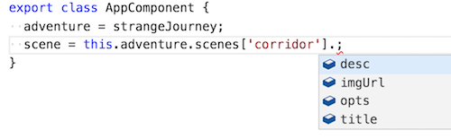
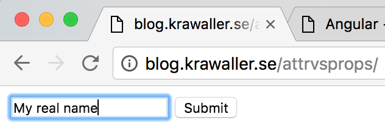

The new Angular
The king is dead, long live the king!
Course overview
1. Introduction
- Your teacher
- Course structure
- Manifesto
- The name Angular
- Hello World
- The chain
- Gamebook - the beginning
2. Dependencies
- CoreJS
- TypeScript
- ZoneJS
- Reflect metadata
- RxJS
- SystemJS
3. Components 101
- Component basics
- Component styling
- Reading model values
- Template expressions
- Built-in directives
- Gamebook - dynamism
4. Components 102
- Gamebook - state
- Catching View events
- Lifecycle hooks
- Politics
- Debugging Angular apps
- Gamebook - page turning
5. Composition
- Child components
- Passing data
- Receiving data
- Passing elements
- A composition case study
- Gamebook - composition
6. Dependency injection
- Dependency VS input
- Injection explained
- Dependencies in AngularJS
- Dependencies in Angular
- Providing dependencies
- Non-class dependencies
- Services
- Gamebook - dependencies
7. Forms
- Two-way data binding
- Forms
- Validation
- Reactive forms
- Template referencing
- Gamebook - extras
8. Postludium
- What's next?
9. Appendix: Web stuff
- The JavaScript language
- The web as a platform
- Node and NPM
- CSS Selectors
- Object references
- Attributes vs Properties
- Functional programming
- Statements vs Expressions
10. Appendix: ES2015
- Versatile object definitions
- Destructuring and rest
- Versatile function definitions
- Spreads
- Modules
- Classes
- Decorators
- Miscellaneous
- Trying it out
11. Appendix: NgModules
- Introducing NgModule
- Module scoping
- Module motivation
- Root module
- AoT vs JiT
12. Appendix: Directives
- Node manipulation
- Server safety
- Consorting with the host
- Case study - host
- Structure directives
13. Appendix: various NG
- Pipes
- Routing
- Animations
- Testing Angular
Introduction
welcome to the jungle
Sections in this chapter:
- 1. Your teacher
- 2. Course structure
- 3. Manifesto
- 4. The name Angular
- 5. Hello World
- 6. The chain
- 7. Gamebook - the beginning
1-1. Your teacher
Let's start with the most important - me!
So, who am I?

Reach me at...
- david.waller@edument.se
- @krawaller
Don't be a stranger!
But, fair warning - I spend my days singing this gospel:

1-2. Course structure
How we'll go about things
The course is divided into several chapters, where you're currently in the first.

We access the chapters from an index, giving you a birds-eye view of the entire contents.
Each chapter has many sections:

In the printed material (or PDF) and in the presentation top-right corner, the slides are numbered X‑Y‑Z where...
Xis the number of the current chapterYis the number of the section section within that chapterZis the number of the slide within that section
Some sections are exercises, where you'll get to internalise what we've been talking about through a practical task.
These are all tied together in that it is one single app that you will keep tinkering with.
Quite a bit of material live in the Appendixes. You should take a look what's there, and we'll dive down when we need to or feel like it!
1-3. Manifesto
what we want to achieve
Obviously, first and foremost, this course aims to teach you about Angular.
As with all our courses we strive not to focus just on the API, but mainly to provide a deep understanding for the subject.
In this case, the Angular way of thinking!
Also, in the case of Angular, a detailed-oriented focus would be extra unfortunate as things are still changing around quite frequently.
1-4. The name Angular
Nya gamla Ullevi
So - Angular!
First lesson for the day: this is a completely new framework.
It is rebuilt from the ground up but borrows ideas from its predecessor, AngularJS (or Angular 1).
Angular v1 still lives on, and will be developed in parallel with Angular v2+.
Really, the new Angular could (should?) have been called something completely different.
So - can you spot the difference between these two?


Obviously;
- The first is the logo for AngularJS
- The second represents Angular
Some more comparisons:
| Angular v1 | Angular v2+ | |
|---|---|---|
| Official name | AngularJS | Angular |
| Homepage | http://angularjs.org | http://angular.io |
| NPM package | angular | @angular |
| Git repo | angular/angular.js | angular/angular |
| version (jan 2018) | 1.6.8 | 5.1.3 |
...isn't this hugely confusing?
Yes. Yes, it is.
And since development continues on Angular1 - what happens when they need a new major version?

Because of this confusion, many opted to refer to the new framework as Angular 2, even though that is not the official name.
But that doesn't work anymore, since Angular "2" is now version 5.
...and, to put a cherry on the cake, there never was a version 3.
But, jokes aside - Angular is a well thought-through framework using cutting-edge technologies while still leaning on experience from AngularJS.
As such is it well worth getting to know. So, let's do just that!
1-5. Hello World
hello yourself!
There's really a whole lot to learn before we can say hello to the world, but - let's cheat!
We'll jump straight into the deep and see what a Hello World demo would look like!
So, there was a lot of things in that code that we didn't understand at all.
@NgModule({
imports: [ BrowserModule ],
declarations: [ AppComponent ],
bootstrap: [ AppComponent ]
})
class AppModule {}
platformBrowserDynamic().bootstrapModule(AppModule);
But main.ts seems to be mainly bootstrapping stuff.
And app.ts didn't really look that bad!
@Component({
selector: 'app',
template: '<p>Hello world!</p>'
})
export class AppComponent { }
If we pretend that weird @ sign wasn't there, this looks almost decipherable!
And of course, throughout this course, we will decipher all of what you just saw.
But now you have an idea what we're dealing with!
1-6. The chain
From source to seeing
In our sheltered demo setup it is a bit hard to get a feel for the setup chain, since all of that takes place behind the curtain.
Let's peek, at least squintingly, at what that looks like before we move on!
Here is an overview of what needs to happen before the user can interact with your Angular app:

(Although it is possible, but not advisable, to cheat)

So, if we don't cheat, how do we make all this happen? Let's look at a few different setups.
Here's the Quickstart setup:
Everything happens in the client's browser.
A more typical approach is to have a build step, where we do stuff on the developer's computer. Here's a common setup:

Transpiling and bundling are often done at the same time.
An advantage of a build step is that it lets us shrink the code:
This is primarily done through 3 different means:
| Minification | Remove whitespace, rename variables etc. This also obfuscates! |
| Compression | Using gzip or similar to pack the file |
| Tree shaking | Identifying and eliminating unused code from the package |
We can increase performance by moving the template compiling to the build step:

But, we're getting ahead of ourselves!
1-7. Gamebook - the beginning
left or right, block or strike?
Even though we really don't know what's going on yet, let's have a quick first exercise!
This will mean using techniques and tools we haven't explained yet, but, humour us and follow along anyway! :)
We'll now walk through the instructions together so you know what to do.
But remember that you have these same exact slides in the provided material, so refer to that while you're working!

So! Does anyone recognizes this book cover?
This is the first of the legendary Fighting Fantasy gamebooks! They work something like this:
A dark hallway extends into the unknown. You can just make out the outline of a door to your left.
- to try the door, go to page 43
- to fumble down the hallway, go to page 231
Throughout this course we will learn Angular by hacking away at our own gamebook app!
Now, with the Hello World demo fresh on our retinas, we'll start by just making a static example page.
Your illustrous teacher will provide you with a starter kit, which you should download to your computer and open in your editor.
Then, moving forward, every iteration of the app will have its own folder inside the starter kit.
Before we can do anything we must download the dependencies. You must...
- open a node terminal (there's one in VSC!)
- navigate to the exercises
- copy the
_seedfolder - navigate into the copy
- type
npm install
In this folder you'll find a bunch of files, most of which you don't need to touch.
For now we only need to talk about...
- a
src/app.ts - b
src/module.ts - c
main.ts
The app.ts file defines and exports a single component.
On this small scale you could say that this is the application!
The only part you need to care about now is the template, which contains what should be rendered to the screen.
You should change this template so that it shows a single page from a gamebook.
It won't have any functionality yet, just a static rendering.
The template should contain:
- An adventure title that never changes
- A scene title
- An image (link it in using an
imgelement with asrcattribute) - A text describing the scene
- A list of options (that won't be clickable yet, just make them pure text)
To prevent the image from being too large, add a quick styling to the Component metadata:
styles: ['img {max-width: 250px; max-height: 200px;}']
The module.ts will...
- Create a root module
- Import the needed dependencies
- Import the component from
app.ts
You don't have to change anything here unless you want to add more components.
Finally, main.ts is the bootstrapping file It will
- import the app module
- bootstrap it
You don't have to change anything here.
After you've finished the template it is time to bundle up!
For these exercises we'll be using webpack.
To bundle up your app, you must type...
npm run build
...inside the project folder.
This will create dist/bundle.js, which dist/index.html is already wired to use.
Now you can view dist/index.html in your browser and see your app in action!
This is best done over a web server. The easiest way is likely to do this from inside your editor if it has that functionality.
Now that we've had a taste of creating an Angular app, we'll rewind to the actual beginning and lay out the tools and theories we need to actually understand what we just did.
Dependencies
What makes Angular tick
Taking a detour before getting into Angular for real, we will now tour the dependencies of the framework!
Sections in this chapter:
- 1. CoreJS
- 2. TypeScript
- 3. ZoneJS
- 4. Reflect metadata
- 5. RxJS
- 6. SystemJS
2-1. CoreJS
ES3 -> ES5
CoreJS is a node module that provides polyfills for ES5 (and some more advanced features).
This means we can write code in ES5, but be sure that ES3 browsers can run it.
As you can see, it is a very popular solution:
CoreJS is not actually a dependency of Angular, but as your app is likely to end up as ES5 code (after having been chewed by TypeScript), CoreJS is an easy way to increase browser coverage.
A normal usage of CoreJS is to pull it in via NPM, and then reference the shim file in your main index.html file:
<script src="../node_modules/core-js/client/shim.min.js"></script>
Note that since no code transpiling is taking place, only polyfilling is possible.
2-2. TypeScript
Waiter, there are types in my JavaScript!
TypeScript is language that compiles to JavaSript.
Unlike other such languages like for example CoffeeScript, it is a superset of JavaScript. This is important since it means that regular JavaScript is valid TypeScript.
So what does TypeScript add? Many things!
Most importantly types, as the name suggests.
We can add type annotations to variables, parameters and functions:
let name: string = 'foo;'
function isAllowedIn(age: number): boolean {
return age >= 18;
}
Now, if some other code violates these annotations, TypeScript would flag this as a problem. (During compilation, or even earlier, if your editor is TypeScript-aware.)
However, the real power of TypeScript is that it does static analysis of your code. So if we later typed this...
let willHaveFun = isAllowedIn(16);
...and hovered above willHaveFun, a TypeScript-aware editor would tell you that this is a boolean!
In other words, this example code...
let name: string = 'foo;'
...was unnecessarily complex, as this would be enough:
let name = 'foo';
TypeScript sees from the assignment that name is a string, and will treat it as such.
In other words - simply by activating TypeScript we get a lot of power, even if we don't use any type annotations!
TypeScript isn't strictly a dependency of Angular.
Yes, Angular is written in TypeScript, but that code has already been transpiled to regular JavaScript.
But since we will use TypeScript in our Angular code, TypeScript should be a devDependency of our project.
Exactly how we use it depends on the build setup, or if we're using SystemJS.
So... we don't have to use TypeScript. But what will we use it for?
The following:
- as an ES6 transpiler
- a few type annotations for dependency injections (more on that later)
- for decorating classes as we saw earlier
- class property initialisation which isn't possible in regular JS (yet)
In other words, our code will mostly be normal ES6, so don't be too scared! :)
In an optional part of the exercises we'll also be using TypeScript interfaces.
They are very powerful, but we'll just use them to define object shapes. Kind of a data type!
It looks like this; in the interface definition we specify the expected properties for our object shape:
interface User {
name: string,
age: number
}
Now we can use the interface as a type...
let me: User = { name: "David", age: 37 };
...and TypeScript will ensure compliance:
let you: User = { name: "Bob" }; // angry red squiggly line
Note that interfaces are purely a development artifact, there'll be no trace of them in the generated JS code.
Which means there's no performance or bloat penalty to using them, but we gain in code clarity and bug prevention!
There is a lot more to say about TypeScript that is outside the scope of the usage in Angular. In fact, we have a whole course just about TypeScript!
2-3. ZoneJS
perimeter alarms
ZoneJS is an implementation of zones for JavaScript. A zone is...
an execution context that persists across async tasks
Wat?!
Ok, ok. Imagine this simple app...
...where clicking the button increases the count by 1.
Here's an implementation using React:
let Clicker = React.createClass({
getInitialState: ()=> ({count:3}),
more() {
this.setState({count:this.state.count+1})
},
render() {
return <div>
<p>{this.state.count} bottles of beer on the wall</p>
<button onClick={this.more}>Buy more</button>
</div>
}
})
The interesting part is the statement that is executed when we click the button:
this.setState({count:this.state.count+1})
The only way to change the state in React is to call setState.
This also means that React only needs to update the UI when setState has been called, since that is the only time things can change!
Here's the same app in Angular:
@Component({
selector: 'clicker',
template: `
<p>{{count}} bottles of beer on the wall</p>
<button (click)="more()">Buy more</button>
`
})
class Clicker {
count = 3
more() {
this.count++
}
}
When the button is clicked, we simply mutate an instance property directly:
this.count++
But.. if there's no setState equivalent to piggyback on, how does Angular know when to update the UI?
Angular cheats by patching every function that can cause a change. Because there are only a finite set of times when this can happen, most importantly:
- DOM events
- Timeouts and intervals
- AJAX requests return
AngularJS did the patching by forcing developers to use Angular variants of things:
ng-clickinstead of regular click event$timeoutservice instead of regularsetTimeout$httpservice instead of regularXMLHttpRequest
These special Angular variants would call their native equivalents, but also wrap the UI updating.
In Angular, we patch the native methods directly instead.
Except, it is actually ZoneJS who does the patching for us!
Ok, so ZoneJS tells us when to look for changes, but - what's the point?
Only this: by hooking our UI update mechanics into all points where stuff can happen, we can allow devs to mutate state directly...
this.count++
...instead of forcing them through a function:
this.setState({count:this.state.count+1})
We use zone.js either by referencing it in the html file...
<script src="../node_modules/zone.js/dist/zone.js"></script>
...or importing it in our app root:
import `zone.js`
2-4. Reflect metadata
the story behind the story
Reflect Metadata is...
- a proposal for a new
Reflectglobal object - a sample implementation of that feature
The Reflect object houses functionality that allows you to read / write metadata to / from data structures.
Now, the decorating itself and the weird @ syntax that it uses is not part of Reflect. Reflect is merely a convenient tool to use in that process.
Decorators are a separate proposal, as well as a competing implementation by TypeScript.
Suffice to say that the situation is a bit of a mess.
For our use case all you need to know about Reflect is that Angular relies on it being available, and so we must make sure that it is by referencing it in our html file...
<script src="../node_modules/reflect-metadata/Reflect.js"></script>
...or import it into our codebase:
import 'reflect-metadata'
In the future, when the native Reflect object stabilises, the plan is to do without Reflect metadata. But, we're not quite there yet.
2-5. RxJS
Everything is a stream
Like ZoneJS, RxJS is a PeerDependency, which again means that it is up to you to make sure it is available.
However, unlike ZoneJS, you don't have to bring it into your project.
Just make sure it sits in node_modules, and Angular will reference it under the hood as needed.
So what does it do? RxJS is a stream library. What are those? They are frequently described as
promises on steroids
In other words, they are a tool for working with asynchronicity!
Here are some example streams:
This was fun! Here's a few more:
To give you a sense of the size of RxJS - remember the super simple clicker example from when we talked about zones?
Here's an implementation written with CycleJS:
function Clicker({DOM}){
const click$ = DOM.select('button').events('click')
const count$ = click$.mapTo(1).startWith(3).scan(
(acc,seed)=>(acc||0)+seed
)
return {
DOM: count$.map(count=> div([
div([count+ ' bottles of beer on the wall']),
button(['Buy more'])
]))
};
}
CycleJS is a very different beast that is solely based on streams which makes for a very different programming experience, as you just saw!
But, the details of this are a story for another time.
However, in CycleJS you can choose which stream library to use.
Here's a size comparison for CycleJS clicker apps between rxjs and another lib called xstream:

As you noticed, rxjs is a beast. And as streams aren't central to Angular, there's been some critisism that rxjs needlessly bloats the size of Angular apps.
But there are also those who appreciated the opportunity to use the precense of RxJS in Angular as an excuse to learn streams by finding a use in their apps for it!
2-6. SystemJS
on-demand loader
SystemJS is a
universal dynamic module loader - loads ES6 modules, AMD, CommonJS and global scripts in the browser and NodeJS
This means that if your code is modularised into files using any of those formats, SystemJS will let you run that code in the browser.
If your code is using modern features that need to be dumbed down for the browser, SystemJS will need a transpiler.
There are therefore plugins to use Babel, Traceur or TypeScript.
You use SystemJS by including is as a script tag in your html file:
<script src="node_modules/systemjs/dist/system.src.js"></script>
This will create the System global object.
You will then likely need to do some configuring, for example giving the path to the node_modules directory.
System.config(myConfigObj);
This is traditionally done in a separate config file:
<script src="systemjs.config.js"></script>
Now you can start your application by importing the module containing the starting point:
System.import('app.js');
Since SystemJS will be loading the non-starting files on the fly as they are needed, it works best if you load your html file with a web server.
Otherwise you risk being hampered by disallowed cross origin HTTP requests.
So in essence, SystemJS is a way to do transpiling and bundling in the browser.
This is useful for quick prototyping and experimenting as it means we don't need webpack/browserify or something similar, but for production it is recommended that you serve a precompiled bundle.
What then is the connection to Angular?
None at all! Except that they use SystemJS for their official Quickstart
This is likely also the reason that it keeps popping up in 3rd party articles related to Angular.
Components 101
The building blocks
Sections in this chapter:
- 1. Component basics
- 2. Component styling
- 3. Reading model values
- 4. Template expressions
- 5. Built-in directives
- 6. Gamebook - dynamism
3-1. Component basics
The primary building block
Unlike its predecessor AngularJS, Angular is component centric.
The vast majority of your code is likely to be made up by components.
Much of what was housed in controllers in AngularJS has moved into components in Angular.
So, let's learn about components!
In Angular, components are made up by two parts:
- A model, represented by a
class, to hold values, methods and lifecycle hooks. - A view, represented as decorated metadata on the class, to hold template and related things.
This can be translated to the following structure map:
In the template we can read values from the model:
Also we can use model methods as event handlers in the template...
...which causes the values to change and to be read again.

Thus we get a uni-directional dataflow on a component scale.
We can boil the cycle down to this:

Understanding this cycle is absolutely central in learning about components!
3-2. Component styling
putting on the makeup
As you've already seen flash by, the Component metadata can have a styles property:
styles: ['h1 {text-decoration: none;}']
It should contain an array of CSS strings that will be applied.
As with the templates (which we just might have forgotten to mention!), we can also refer to external files:
styleUrls: ['app/css/usersection.css']
But, wait a minute. If we're just throwing regular CSS at the component, then how is it scoped?
Won't these styles just apply to everything?
Excellent question! As usual, it depends. :)
Specifically, it depends on our selected level of view encapsulation!
Angular offers two approaches for rendering components:
- as regular HTML (meaning no encapsulation)
- as Shadow DOM (meaning full encapsulation)
Shadow DOM, as an elevator pitch, is a way to have tiny contained documents within the larger document.
...you mean like iframes?
No, yuck!
Well, ok, yes. Sort of. But with controlled ways to interact with the context.
We control encapsulation through the encapsulation metadata property. It has three possible values:
| Native | Assume native shadow DOM support in the browser (which few have) |
| Emulated | Use an Angular-included emulation of shadow DOM. This is the default |
| None | Render component as regular HTML |
There are constants for the modes on the core-provided ViewEncapsulation object, so configuration looks like this:
@Component({
encapsulation: ViewEncapsulation.None,
...
The shadow DOM has some useful pseudo selectors:
:hostmatching the containing element:host-context()which lets us test the host context
Likely you'll only use :host.
And likely you're fine with the Emulated default, so for normal development you won't have to care at all!
The only things to remember are that...
- you can style the containing element with
:host - styles are scoped to the component (by default)
3-3. Reading model values
and he went hither
Let's get this show going by looking at how the view reads values from the model!

The template can read values from the model by using interpolation. Anything within double braces is evaluated as a model property:
@Component({
selector: 'app',
template: `<p>Hello, {{name}}!</p>`
})
export class AppComponent {
name = 'world'
}
See also the Hello someone demo.
But what if the value isn't static? Let's say we change our model to update 'world' to 'WORLD' after 1 second:
class AppComponent {
name = 'world'
constructor(){
setTimeout(()=> this.name='WORLD',1000)
}
}
To handle this, what do we need to do?
Nothing! This is the zone thing that we mentioned earlier. Zone enables Angular to check all bindings at every point in time when something might have changed, and update references accordingly.
See for yourself in the Hello Changing demo.
Interpolation isn't just for text nodes - sometimes we want model values in element properties too:
@Component({
selector: 'app',
template: `<input placeholder="{{helpText}}">`
})
export class AppComponent {
helpText = "Enter your name..."
}
Side note - remember our earlier look at the difference between a property and an attribute!
- an attribute is an attribute on the HTML element
- a property is a property on the resulting DOM node.
Since we are writing HTML code you'd think we're dealing with attribute, but as Angular deals exclusively with properties (well, almost) we will use that word instead.
Back to interpolation - those double brackets in a string really aren't pretty:
<input placeholder="{{helpText}}">
But there is an alternative syntax for properties which is more explicit, namely the bind- prefix:
<input bind-placeholder="helpText">
These two lines are completely equivalent.
The bind- prefix is prettier but still rather verbose:
<input bind-placeholder="helpText">
...so quickly the bracket shorthand became popular:
<input [placeholder]="helpText">
This is still equivalent to the previous versions.
See the different syntaxes side by side in the Property demo.
And note again that the bind- and bracket syntaxes are just for attributes. Inside a text node there is no choice, we must use double braces.
3-4. Template expressions
uncovering the lie
We've now seen how to reference model properties in the view:
@Component({
selector: 'app',
template: '<p>Hello {{name}}</p>'
})
export class AppComponent {
name = "Batman"
}
But we are actually not limited to referencing properties!
The code inside the interpolation/binding is called a template expression, and it is evaluated much like JavaScript:
You finished {{place === 1 ? 'FIRST!!' : 'in '+ place + ' place'}}
But not exactly like JavaScript expressions. Here are some important limitations:
- we can't do side effects, only pure expressions
- we can only reference model properties and methods, global variables are out of reach
There are also some additions when compared to JavaScript:
- aThe pipe operator
- bThe safe navigation operator
Let's briefly touch on these!
The pipe operator is familiar to AngularJS developers as a convenient way to call functions inside templates:
userName | UpperCase
We'll dig deeper into pipes later!
The safe navigation operator is recognisable from many other languages, for example CoffeeScript. It allows us to dig into objects without erroring if some step is undefined:
user.address?.street
Note that this is in contrast with AngularJS, where object navigating was inherently safe in their version of the template expressions.
Even though the template expressions are powerful, you should strive to keep them as simple as possible.
More complex logic should be done in the model.
3-5. Built-in directives
Not made to order
Although the subject of conversation is Components, we still need to talk about Directives. And actually, Components are a sub-group of Directives.
A directive, in the broad term, simply means something we put in the HTML that has special meaning. It directs the browser in how it should behave.
Like with AngularJS, a big part of learning the framework means learning what is already there!
We'll know explore what's already there in Angular, but first a word of warning: The demos we'll see will include concepts we've yet to explore! Don't let those get you down, we'll cover them soon enough.
So! In the case of Angular and directives, we get five of them to use in everyday templating. There are three structural directives...
- angFor
- bngIf
- cngSwitch
...and two helpers:
- dngClass
- engStyle
First ngFor, which as the name implies is a helper for rendering lists:
<div *ngFor="let msg of messages">{{ msg }}</div>
This will repeat the div for every item in the messages array.
Noticed the scary * character prefixing ngFor? That is a shorthand, which expands to this:
<ng-template ngFor let-msg [ngForOf]="messages">
<div>{{ msg }}</div>
</ng-template>
All structural directives, who change the HTML structure, uses the same * syntax.
You can see both variants of the for loop in the Forloop demo.
Equally mandatory as ngFor is the ngIf directive, which lets you optionally display something given the truthiness of an expression.
<p *ngIf="flag">I only show when flag is true!</p>
See this live in the If demo.
What if we have an if-else situation? There are two approaches;
- Simply use two
ngIfwith inverted clauses as in the IfElse demo. - Pick a connected
ng-templateas in the IfElseTemplate demo.
Then ngSwitch, which of course emulates a switch statement in the template.
But! We're actually not going to go into detail, as ngSwitch is rarely useful.
Such logic often belongs in the model, a subject we'll come back to.
If you're curious anyway, check out the Switch demo.
Now ngClass which can dynamically set a single style...
<div [class.someClass]="someCondition"></div>
...or many (keys are classes, values are conditions) :
<div [ngClass]="someObject"></div>
Try it in the Class Single and Class Many demos.
Finally ngStyle! Much like with ngSwitch we advise against using this directive for normal usage.
If you want to dynamically alter the style for an element - which is what it lets you do - it is better to add/remove a CSS class with ngClass.
There are however two good reasons for using ngStyle:
- The styles depend on state (think x- and y coordinates in a game)
- We're doing full-blown CSS in JS
But, if you are curious, check the Style Single and Style Many demos.
In this course we'll be focusing mostly on Components, but there's definitely more to say on directives.
See the Appendix for more details!
3-6. Gamebook - dynamism
hello someone
Let's revisit our Gamebook project! To start off,
- copy the folder for the first version,
- paste it right next to the first version, and
- give it the name
FF02-dynamic.
A static gamebook won't get us very far. Let's make it show dynamic cata instead!
Here's the plan - we need to:
- apackage the scene data somewhere
- bmake the component fetch data
- cmake the template read data from that prop
Having the scene data hard-coded in the component won't get us very far.
Let's create a new file data.ts for the data to live in!
The data file should export a single object containing our data. But let's look ahead - we're going to need more than one scene.
Therefore we should make the data file contain a full adventure!
The adventure object could look something like this:
export const myAdventure = {
title: 'A strange adventure',
scenes: {
someScene: { ...scene data goes here... }
// later there'll be more scenes here
}
}
Note that we chose to store scenes in an object as opposed to an array. If we chose an array instead, a link to scene 7 would break if we later insert a new scene at position 4, leading to a more brittle structure.
The scene object needs to contain...
- title
- img url
- text
- options array (a list of strings, for now)
Only make one single scene for now, containing what is currently in the template.
Now we adapt the component in app.ts:
- Import the adventure into the file
- Add an
adventureprop to the component - Initialise that prop to the imported adventure data
- Add a
sceneproperty to the component - Initialise that prop to the only scene in
this.adventure
Having done that, adapt the template to read the data from the scene prop instead! It will end up containing a bunch of interpolations referencing scene.title, etc.
It should also show adventure.title up top!
Now, the template is an actual template, capable of rendering any scene we throw at it.
Bundle your code as before (node build nameoffolder in the root), open index.html and make sure things still work!
There'll be no visible difference from the previous version, we've just done some preparation work for what is to come.
Challenge: If you have time over, let's employ some TypeScript power!
If you take on this challenge there will be further TypeScript challenges building on this one in the following exercises.
The plan is to make use of TypeScript interfaces to get code completion for adventure and scene data!
- aCreate a new file to house the interfaces
- bExport an interface describing the scene object
- cExport an interface describing the adventure object
- dMake the data file use the adventure interface
In a big project you would likely have one interface per file, but we can put them all in a single file.
Create a file for this purpose called interfaces.ts!
In that file we first export the Scene interface.
export interface Scene {
// definition in here
}
It should specify all four properties that a scene can contain. In the definition the keys are properties and the values are types!
To say that a property is an array of something, as we need to do with the options, put a pair of brackets at the end of the type:
options: string[]
Now also add an Adventure interface to the same file, describing the two adventure properties!
export interface Adventures {
// definition in here
}
The definition of the scenes prop (or pages or whatever you've decided to call it) is a bit special since it is an object with any number of keys where each value is a scene! This has the following special syntax:
scenes: {
[index: string]: Scene
}
Now, in data.ts, add a type annotation to the exported object saying that it is of type Adventure!
Not that we really need it yet, but we now have code completion for our data!

Components 102
Much wants more
Sections in this chapter:
- 1. Gamebook - state
- 2. Catching View events
- 3. Lifecycle hooks
- 4. Politics
- 5. Debugging Angular apps
- 6. Gamebook - page turning
4-1. Gamebook - state
storing position
Before we get started on advanced component API:s, let's do a little exercise prelude!
As before;
- copy the folder of the previous version,
- paste it right next to that version, and
- give it the name
FF03-state.
So! The plan is to introduce gameState to our model, which should store the progress the player makes.
Here's the plan:
- aDesign the shape of the
GameStatedata - bAdd a
startStateprop to theadventuredata - cAdd a
gameStateprop to the component - dTurn
sceneinto a computed property
We begin by figuring out what the state of a game session looks like.
It really only needs to track one single thing, namely the key of the current page!
But as the future might bring more stuff, let's put that into an object so we can add more things later!
So our state looks something like this:
{
atScene: 'corridor'
}
If you're following along with the TypeScript stuff we should of course create an interface for this object, called GameState or something similar.
It makes sense for the starting state to be part of the adventure data.
After all, only the author of the adventure knows which page to start at (and how much gold to begin with, etc).
Therefore, add a new startState prop to adventure in data.ts, containing an initial game state object with atScene pointing to the first page of the adventure.
Of course we only have one page right now, so use that as starting page!
If you have an Adventure interface that must now be updated to allow a startState prop of type GameState.
Now, add a gameState property (or another name of your choosing) to our component class in app.ts, and initialise it to the start state according to the adventure.
gameState = this.adventure.startState;
Finally, let's turn our attention to the scene prop.
Right now we manually point it to the scene object inside the adventure:
scene = this.adenture.scenes['corridor'];
But this doesn't make sense anymore, since the current scene can be computed by looking at gameState and adventure!
We might even risk introducing out-of-sync bugs if gameState and scene don't agree!
We should therefore turn scene into a computed property.
Make scene a getter by using the get keyword and turning it into a method, which returns the correct scene by reading from gameState and adventure.
For an example how that is done, see the Computed Property demo.
Now our small refactoring is done! Rebuild, and if it all fits together it will again work just like before.
4-2. Catching View events
What's up?
Now we take a look at the other half of the cycle!

Here is a super simple event catching example:
@Component({
selector: 'app',
template: `
<button on-click="flag = !flag">Toggle!</button>
<p>Flag? {{flag}}</p>
`
})
export class AppComponent {
flag = false
}
Take a closer look at the event handler:
<button on-click="flag = !flag">Toggle!</button>
The on-click attribute will be executed as code when the event happens.
Note that on-click is not a native DOM event handler. That would have been called onclick.
But we really shouldn't mutate values in the view so let us call a method instead:
@Component({
selector: 'app',
template: `
<button on-click="toggle()">Toggle!</button>
<p>Flag? {{flag}}</p>
`
})
export class AppComponent {
flag = false
toggle() {
this.flag = !this.flag;
}
}
Remember that we are not attaching a function but writing code that will run when the event happens. So don't write this...
<button on-click="toggle">Toggle!</button>
...since you likely mean this:
<button on-click="toggle()">Toggle!</button>
Similar to how [attr] is a shortcut for bind-attr, we can use (event) instead of on-event:
<button (click)="toggle()">Toggle!</button>
In case we are interested in event data, like if we catch a keyup event from an input element, Angular automatically creates an $event variable containing the DOM event object:
@Component({
selector: 'app',
template: `
<input (keyup)="myName = $event.target.value">
<p>Who am I? {{myName}}</p>
`
})
export class AppComponent {
myName: string
}
See this in the Catch event variable demo
As noted before we prefer to have value mutations in the model, so we should pass the event to the model instead:
<input (keyup)="setName($event.target.value)">
<p>Who am I? {{myName}}</p>
class AppComponent {
myName: string
setName(txt) {
this.myName = txt;
}
}
Much like the template expressions are sort of JavaScript, so are the template statements that we use as event handlers. Most importantly, they also can only reach values and methods on the model.
There are more details in the Template statement sections of the official docs.
4-3. Lifecycle hooks
the lifespan milestones
We won't be using them in our project or go into too much detail, but we'd be amiss if we didn't mention the lifecycle hooks.
These are magical method names that will be invoked at certain points in the lifecycle of a directive.
For example, ngOnInit is called after the first render, and ngOnDestroy when it leaves the DOM.
You can see the full list of methods in the official docs, together with a demo component that shows off them all.
4-4. Politics
let's talk about the elephant
Let's zoom out for a while and discuss what we've just learned. All of those directives can be called a DSL for templating, and most templating solutions have corresponding solutions.
The reason is simple - we're working in HTML which isn't a logical language, but since we need logic in our template we have to add it somehow.
This is in stark contrast to React, which expresses the templates in JavaScript. If you need a loop in a React component, you'll use a regular JavaScript loop:
var Chores = function(props){
var renderedChores = props.chores.map(function(chore,n){
return <li key={n}>{chore}</li>;
});
return (
<div>
<h4>My chores:</h4>
<ul>{renderedChores}</ul>
</div>
);
}
But! Since we need to output HTML in the end, React instead has a DSL for expressing nested data in JS, namely the weird xml syntax you saw inside the return statement.
return (
<div>
<h4>My chores:</h4>
<ul>{renderedChores}</ul>
</div>
);
Because here's the foundational problem - we...
- express UI:s as nested data
- perform logic to define the UI
...so we need both logic and nested data at the same time.
It all boils down to this:

4-5. Debugging Angular apps
bug hunting tools & tricks
When debugging Angular apps, regular JS debugging tricks still apply to a large extent.
And the king of those is; make sure that you know the browser dev tools!
We'll walk through three tips for debugging Angular apps:
- aAugury
- bBound JSON output
- cLogger services
Angular Augury is a Chrome dev tools extension for Angular debugging, serving much the same purpose as Ng-Inspector and Batarang for AngularJS.

Here's an in-action screenshot of what Augury looks like:
As you can see, Augury shows us
- The component tree
- Component state
It also gives us powerful tooling around dependency graphs and route overviews.
For components with Outputs, Augury let's you trigger outputs for easy experimenting:

Augury also has a bunch of other features that makes it well worth getting to know.
Of course, given the fickle nature of Angular, Augury is in heavy development.
Also, note that Augury requires a web server to function! It won't work over the file:// protocol.
Now for a neat trick to debug component state!
Take our gamebook project for example, which now has gameState:
gameState: GameState = {
atScene: this.adventure.startsAt
}
Imagine how later on it will become much more complex:
gameState: GameState = {
atScene: this.adventure.startsAt,
gold: 5,
inventory: ['sword', 'shield'],
hp: 12,
xp: 3
}
It is quite common for apps to be driven by a central state like this, and for that state to change frequently.
Debugging will then often mean to check the contents of that state. How do we easily do that?
A naïve way to debug this would be to sprinkle...
console.log(this.gameState);
...in various places. This works ok, but quickly becomes cumbersome.
Now for the trick: by adding this line to the template:
<pre>{{gameState | json}}</pre>
...we get a see the state live directly in the view!

Try this out in the JSON debug demo!
AngularJS developers will recognise this, as the exact same thing was possible in AngularJS!
While debugging an app, you inevitably start sprinkling console.log calls here and there.
And, equally inevitably, forget to remove some of them before production...
To mitigate that, and to allow for more powerful logging features, it is common practice to instead use a Logger service.
In its simplest form this just implements a log method:
export class Logger {
log(msg: any) { console.log(msg); }
}
You would then inject this into your component or whatnot...
constructor(private logger: Logger){}
...and use the logging where needed:
someComplexMethod(){
let result = /* complex calculation */
this.logger.log(result)
}
Using a Loggerservice in this way means that you...
- can ship a "mute"
Loggerin production instead of removing log statements - hook in other functionality such as writing logs to files, etc
4-6. Gamebook - page turning
Actual interaction
As before;
- copy the folder of the previous version,
- paste it right next to that version, and
- give it the name
FF04-interaction.
The time has finally come to implement page turning! Here's the plan;
- aAdd more scenes to the
adventuredata - bTurn the option data into objects with links
- cMake option clicking update game state
To turn between pages we need more than one page, so add a few more to the adventure in the data.ts file!
const adventure = {
title: 'A strange adventure',
startState: {atScene: 'house'},
scenes: {
house: { ... },
road: { ... },
ambush: { ... },
...
}
}
We must also turn the option strings into objects, since they need to contain both
- the text to show
- which scene to move to
So for each link, turn them into objects and add the key to the target scene!
Again, if you're using TypeScript interfaces you must update those.
To avoid the Scene interface growing too complex you could add a new Option interface, and adapt Scene to use that for the options!
Finally the time has come to make the options clickable!
- add a
changeScenemethod to the component that expects an option object and updatesgameStateaccordingly - use that method as clickhandler for options with
(click). If you are typescripting, the clickhandler parameter type should be anOption!
Since we've already wired scene to read from gameState in the previous exercise, we're all done! Reward yourself by trying out your fully playable adventure.
Although a humble beginning, you now have all the needed parts to make a full game book!
...ignoring the likely wishes for more functionality such as health points, inventory etc...
Now that we have state that we manipulate, don't forget to use the debug tactics you've learned about!
Challenge: If you sailed through all of that, how about implementing an automatic reset for game-ending scenes with no options?
And parhaps also adding some dramatic background-color to the end-game scenes while we're at it?
How would we go about all this? Well, we need to show a restart link when the scene has no options.
For our model, this means we can:
- add a
gameOvergetter that returnstrueif there are no options in the scene - add a
resetGamemethod that setsgameStatetostartStatefromadventure
And in our view:
- add a reset option
<li>that- only show if
gameOveris true - calls
resetGamewhen clicked
- only show if
- wrap the whole template in a
div - add a dynamic
deadclass to thedivusing[class.dead]="gameOver" - add a style for the
.deadclass
If you've followed along, it is very likely that you now have a bug where nothing happens when we click reset. What is going on?!
Here's a clue: use the <pre> debug trick to show adventure.startState on the screen. That object should of course never change, but, does it, perhaps? Why, and how do we prevent it?
Eventually we probably also want to have dead ends that doesn't mean that the player died but that he finished the adventure successfully. How would we distinguish between wins and losses?
We leave that as a challenge challenge for you to ponder after the course! :)
Composition
Combining components
Sections in this chapter:
- 1. Child components
- 2. Passing data
- 3. Receiving data
- 4. Passing elements
- 5. A composition case study
- 6. Gamebook - composition
5-1. Child components
Spawning children
So, finally - how do we render one component from another in Angular? The answer has two parts:
- make sure the child component is visible to the parent from an
NgModuleperspective - include markup in the parent template that matches the child selector
Component selectors are mostly element types:
@Component({
selector: 'myCustomComp',
template: '...'
})
To use this component, our markup must contain:
<myCustomComp></myCustomComp>
But technically we can use any CSS selector, including targetting attributes like the built-in directives:
@Component({
selector: '[myCustomComp]',
template: '...'
})
<div myCustomComp></div>
But, as stated, element types are the most common.
Which incidentally means that usage of Angular components is identical to Web Components.
This opens some interesting possibilities, but we won't explore that further in this course.
It is also identical to the relation between the root component and the main index page! Our root components have all used this selector:
@Component({
selector: 'app',
template: '...'
})
...and in the main index.html files you find this:
<app>loading...</app>
Again, composition works in the exact same way.
See it in action in the Composition demo, or the Composition Scoped which uses components from different NgModules.
Btw, did you notice the style definition in the root in the demo?
:host /deep/ span {
border: 1px solid black; padding: 3px;
}
As you might guess, the /deep/ selector means we dig into the encapsulation of our children to be able to style them too.
5-2. Passing data
pouring down
Time to start exploring parent-child communication, and specifically, how parents give input to their children!

The syntax is actually rather ingenious - with an @Input decorator we can mark a property as an input:
class Child {
@Input() someProp
aPrivateProp
}
After having done so, the someProp property can be bound to in the parent template:
<child [someProp]="myVariable"></child>
We can also alias the property name if we for some reason want to have the input named differently:
class Child {
@Input('aliasedProp') someProp
}
<child [aliasedProp]="myVariable"></child>
And as the bound property is a normal class property, we can also use a setter:
class Child {
aPrivateProp: string
@Input() set exposedProp(fromMum){
this.aPrivateProp = fromMum
}
}
It looks exactly the same as before from the outside:
<child [exposedProp]="cleanYourRoom"></child>
You can see all three variants in action in the Child input demo.
If we tried to bind to aPrivateProp which hasn't been exposed via @Input, or a non-existent property, Angular would throw an error:
Notice how it points out the offending input with an [ERROR->] marker.
Interestingly, this is the exact same error we'd see for ngModel if we forgot the FormsModule!

That makes sense since native input elements have no ngModel prop.
But it also reveals some interesting facts:
- directives can have inputs too
- we have already been using inputs without knowing it!
For example, we use ngIf by feeding it an expression:
<div *ngIf="someFlag">
shown only if `someFlag` is truthy!
</div>
Obviously ngIf uses [ngIf] as selector, but if what we saw earlier is true, it must also define ngIf as an input!
And sure enough, in the source code we see this:
@Directive({selector: '[ngIf]'})
export class NgIf {
private _hasView: boolean = false;
constructor(...) {}
@Input()
set ngIf(condition: any) {
...
}
}
So the old AngularJS cliché still holds true;
Angular is built with Angular
Like in AngularJS, Angular defines a central infrastructure, and then uses that both to create built-in helpers and allow developer-made building blocks.
Btw, wanna now how to easily find the source code for some part of Angular? Easy:
- Go to the official API docs
- Type in the name of the part in the search field
- Click to get to the dedicated page
- Find the source link in the bottom-right corner
5-3. Receiving data
here you go
Time to explore the other side of parenthood - children output!

Let me guess - we mark child properties with an @Output decorator?
You've got it! :)
But still, there's far more to the story...
Because if we were just to expose a regular property...
class Child {
@Output() someProp = 'foo'
}
...how would we connect to that in the parent?
A naïve approach could be a simple two-way data binding through simply binding to a prop in the parent:
<child (someProp)='parentProp'></child>
But this would fall apart quickly. What if I don't want to store the value but simply act when something happens?
And how would I know when the value changes?
We've actually already seen output from a parent perspective when we learned about event handling!
There we were taught that for outputs we don't use template expressions but template statements!
<child (someProp)='catchOutput($event);'></child>
We also saw that in this statement we can access $event which contains the message from the child.
This makes sense - now I have code that triggers upon receiving the message, and I can do what I want.
And as you've already figured out, there's no difference to child component output and outputs from input elements.
Because the inputs are clad with the ngModel directive, who apparently are using @Outputs under the hood.
Again,
Angular is built with Angular
So, can you guess what @Outputs look like in children?
You've already seen the answer, way back in the beginning of the course...
Now we finally get to see the main reason why Angular needs RxJS - you see, outputs are implemented through streams!
Thinking about it this makes a whole lot of sense - streams are an asynchronous chain of events, which is exactly what child outputs are too!
In Angular this means that output properties are EventEmitters, which are streams that emit events of a given type:
@Output() whine = new EventEmitter<string>()
Using this the child will emit events to the parent:
this.whine.emit(this.msg);
See this in action in the Child output demo.
And, speaking on ngModel - if we were to peek at that source, what could we expect?
- it should have an
@InputnamedngModel - it should have an
@OutputnamedngModelChange(because of what the banana box syntax actually means) - it is likely very complex :P
And indeed, if we go look, that is exactly what we find!
Speaking of streams - we should also add that you can use them more heavily in your own code too.
For an example, check out the Submitname with Streams demo!
5-4. Passing elements
Here you go, my child
When we looked at composition, we noted how parents and children communicate.
But there is a scenario we haven't covered yet - what happens when we pass elements to a child?
<child>
<p>What will happen to me?</p>
</child>
Unless the child actively captures those elements, they will just disappear.
However the child can capture the elements by including this in its template:
<ng-content></ng-content>
See this in action in the Passing elements demo.
The child can also split the elements up and show them in different places using the select attribute on ng-content:
<ng-content select='header'></ng-content>
<ng-content select='footer'></ng-content>
See this in action in the Passing split elements demo.
5-5. A composition case study
Building a sharable component
In an Angular application components are your primary building block. It therefore stands to reason that you should consider each component API carefully:
- what
@Inputs does it need? - what
@Outputs does it provide?
To wrap our brains around this, let's do a small case study where we implement a stand-alone UI component meant to be integrated into other apps.
We'll be making a confirmation button!
It is meant to be used as a confirmation button in a form:
But of course it is not just a regular button: when the user clicks the button it should allow confirmation and cancel:

Only if the user chooses confirm should the parent be notified, otherwise it just reverts to the previous standby mode.
Additionally we should allow the parent to disable the button if whatever data we're confirming is invalid, for instance if the field is empty:
So let's consider the API for this! We'll need...
- an
@Outputto emit confirmations to - an
@Inputfor whether or not we're disabled
Internally we'll also need to track our current mode, which can be
- standby - showing submit button
- disabled - button should be greyed out
- confirm - showing confirm and cancel
So the map for the component would be something like this:
With our three modes in mind, we could implement the template like so:
<span *ngIf="mode !== 'confirm'">
<button (click)="maybe()" [disabled]="mode === 'disabled'">
Submit
</button>
</span>
<span *ngIf="mode === 'confirm'">
<button (click)="changedmymind()">Cancel</button>
<button (click)="yesimsure()">Confirm</button>
</span>
And here's the model to match that:
class ConfirmComponent {
mode: 'standby' | 'disabled' | 'confirm' = 'standby'
@Output() confirm = new EventEmitter<void>()
@Input() set disabled(bool: boolean){
this.mode = bool ? 'disabled' : 'standby'
}
maybe() { this.mode = 'confirm' }
changedmymind() { this.mode = 'standby' }
yesimsure() { this.confirm.emit(); this.mode = 'standby' }
}
Note how we're not explicitly tracking disabled, instead that input is a setter which manipulates mode accordingly:
@Input() set disabled(bool: boolean){
this.mode = bool ? 'disabled' : 'standby'
}
This pattern is somewhat common - an input doesn't have to be something we store, but can be used as a signal from the outside world.
You can try the component out in the Confirm demo.
And again, the point of this little case study was to highlight the component perspective. Think of your app in terms of components, and think carefully about how they interact.
There is an alternative solution using a lifecycle hook instead of a getter here: Confirm-Hook
5-6. Gamebook - composition
Matryoshka time
As before;
- copy the folder of the previous version,
- paste it right next to that version, and
- give it the name
FF05-components.
Let's clean up our code a bit by using the component composition techniques we just learned about!
Specifically, we're going to abstract out a SceneComponent from the AppComponent:

SceneComponent is given a scene object to render as input, and will output option objects when they are clicked.
In other words, we need to...
- aCreate a new
scene.tsfile forSceneComponent - bUpdate
AppComponentto use the new component - cUpdate the
NgModulein main.ts to expose the new component
Since scene.ts will contain much of what is now in app.ts, let's make a copy of app.ts and call it scene.ts!
In scene.ts we then need to...
- Change the selector to something else
- Change the component name to
SceneComponent - Remove game status, that will reside in
AppComponent. - Remove the
adventureimport, we don't need that - Change
sceneto be an@Input - Make the clickhandler an
@Output - Change the handler to emit clicked option objects
- Remove the adventure title from the template
Back in app.ts we must..
- Change the template to use the scene element
- But still show the adventure title above the scene
- Feed the scene element the current
scene - Connect the scene element output to the click handler
If you took on the reset option challenge in the earlier exercise, we need gameOver state in both AppComponent and SceneComponent, and probably a new Output from scene for the reset clicking.
Alternatively, have the reset button in the AppComponent template instead, separate from the scene options.
Finally, for SceneComponent to be available in the AppComponent template, we must add it to the Declarations array of our module in module.ts.
Now, after all that work, bundle and fire up the new version.
And if everything went according to plan, things will work exactly as before!
Dependency injection
Providing the ingredients
Sections in this chapter:
- 1. Dependency VS input
- 2. Injection explained
- 3. Dependencies in AngularJS
- 4. Dependencies in Angular
- 5. Providing dependencies
- 6. Non-class dependencies
- 7. Services
- 8. Gamebook - dependencies
6-1. Dependency VS input
What do we actually mean?
Take a look at this hypothetical function:
import complexLib from 'complexLib'
function someFunction(arg1,arg2){
/*
Somehow calculate `result` using `arg1`,
`arg2` and methods on `complexLib`
*/
return result;
}
If we were to graph someFunction, it might look like this:
But although that maps the full signature, it doesn't capture the dependency on complexLib. Here's the complete truth:

As someFunction is currently implemented there is a big problem with testability, since we cannot control the dependencies.
Ideally we would just want to test that someFunction calls the correct methods on complexLib, given the values of the inputs.
let complexLib = myMock // someFunction won't use this! :(
let result = someFunction(testval1,testval2)
assert.equal(result,expectedResult)
assert.equal(myMock.usedMethod.firstCall,expectedArgs)
But, how do we make someFunction use myMock?
Let's use this simple example to explore 4 options to handle the dependency:
- ain the signature
- bin a prop
- cin the context
- dwith a constructor
We could simply change the signature from this...
someFunction(arg1, arg2)
...to this:
someFunction(arg1, arg2, complexLib)
Now that the complexLib implementation is passed in, we can easily use a mock:
let result = someFunction(testval1, testval2, myMock)
assert.equal(result,expectedResult)
assert.equal(myMock.usedMethod.firstCall,expectedArgs)
This works, and is probably the easiest solution. Now someFunction is easily testable and not tied to a specific complexLib implementation. Loose coupling!
The downside is that we have mixed inputs with dependencies in the signature, which isn't super intutitive.
But someFunction is a function, and they only have one natural point of entry - the parameters!
We could attach them as props on the function:
import complexLib from 'complexLib'
function someFunction(arg1,arg2){
/*
Somehow calculate `result` using `arg1`, `arg2`
and methods on `someFunction.complexLib`
*/
return result;
}
someFunction.complexLib = complexLib
Now we would test it like thus:
let oldImplementation = someFunction.complexLib
someFunction.comlexLib = myMock
let result = someFunction(testval1, testval2)
assert.equal(result,expectedResult)
assert.equal(myMock.usedMethod.firstCall,expectedArgs)
someFunction.complexLib = oldImplementation
It works, but it is not very convenient.
Or we could use the context:
function someFunction(arg1,arg2){
/*
Somehow calculate `result` using `arg1`, `arg2`
and methods on `this.complexLib`
*/
return result;
}
Now you would have to call someFunction like thus:
import complexLib from 'complexLib'
let result = someFunction.call({complexLib}, arg1, arg2)
Not much better!
We can improve the situation by defaulting to a private reference:
import complexLib from 'complexLib'
function someFunction(arg1,arg2){
/*
Somehow calculate `result` using `arg1`, `arg2`
and methods on `this.complexLib || complexLib`
*/
return result;
}
Now a normal call is normal again:
let result = someFunction(arg1, arg2)
...while testing is still possible:
let result = someFunction.call({complexLib:myMock}, arg1, arg2)
A final example - we could provide someFunction from a constructor to which we pass in the dependency:
function getSomeFunc(dep){
return function someFunc(arg1,arg){
// calc result using `dep`
return result;
}
}
Normal usage will now look like this:
let someFunc = getSomeFunc(complexLib);
let result = someFunc(arg1, arg2);
...while we test like so:
let someFunc = getSomeFunc(myMock);
let result = someFunc(arg1, arg2);
All of these setups sort of work, but all have downsides. The important thing is to...
- understand the difference between input and dependency
- not have a tight coupling to dependencies in your implementation
6-2. Injection explained
needles aren't that scary
Now we will take a look at dependency injection as a concept!
In essence, the idea is that if we can
- aseparate dependencies from inputs, and
- bexplain what dependencies we need, then
- cthe dependencies are injected automatically!
Borrowing from an earlier example, imagine a system where all functions have the following syntax:
everyFunction(...args, dependencies)
In other words, the last argument is an object with dependencies.
Thus we have achieved separation between dependencies and inputs.
Now also imagine that every function somehow specifies what dependencies it needs, perhaps with a definition object on the function:
someFunction.neededDeps = {
lib: 'dependencyID',
anotherLib: 'anotherDependencyID'
}
Which would mean that someFunction expects to be called thusly:
someFunction(arg1,arg2,arg3,{
lib: instanceOfLib,
anotherLib: instanceOfAnotherLib
})
Finally, imagine that we abstract out the dependency providing to a helper function:
callWithDeps(someFunction,arg1,arg2,arg3)
It is now up to callWithDeps to call someFunction with the needed dependencies!
Internally, callWithDeps would
- look at the
neededDepsprop of the provided function. - use the dependencyID:s to procure dep instances from some kind of repository
- call the function with the deps
Of course this assumes that the dependencies have been registered in the repository with the corresponding ID:s.
Ok, so we abstract out the dependency providing. Fine. What is the point?
There's many! Here's a few:
- It makes usage convenient (if done right)
- We can manipulate the repo in a testing scenario to provide mocks
- The repository becomes a recipe for the app
- It makes static analysis of the app easier, enabling things like dependency graphs.
Also, in our example we played around with dependencies for function calls.
But in our Angular code we declare dependencies for instantiation, which makes more sense to leave to the system. Subsequent usage of the instance isn't affected.
A final note: dependency injection (DI), and inversion of control (IoC) which DI is an example of, are design patterns with exact definitions that we haven't religiously adhered to in our explanations.
6-3. Dependencies in AngularJS
Writing a wishlist yesterday
Already back in AngularJS we had dependency injection.
In order to understand the new Angular implementation we will first explore AngularJS's solution!
AngularJS used a very simple system: the constructor function parameters were used as dependency ID:s.
So when AngularJS needs to call this constructor:
function myConstructor(someDepName, anotherDepName){
// doing stuff
}
...it would look in the repository for dependencies named someDepName and anotherDepName.
So if you had previously registered resources...
module.service('myService', definition)
module.value('someConst', 42)
...then your constructor could simply name these resources:
function myConstructor(myService, someConst){
// doing stuff
}
...and they would be provided to you.
There was also a bunch of built-in resources that you could name:
['$scope','$rootScope','$http', ...]
The $ character signifies that this is built-in and not user defined.
Wait. So the parameters are resource ID:s. I get a reference to the function. But how do I derive the parameter names from that? There is no func.params thing, is there?
No, there isn't, and I'm glad you asked!
So, the black magic they're using is a weirdness with string casting in JavaScript.
For example, if we try to cast an object to a string...
myObj.toString()
...we get this completely useless output:
"[object Object]"
But, if we cast a function to a string...
myFunc.toString()
...we get the source code as a string!
"function myFunc(anArg, anotherArg, aThirdArg){ ... }"
So attacking that string with some regex magic...
myFunc.toString().match(/^[^(]*\((.*?)\)/)[1].split(/, */)
...we get a list of parameter names!
['anArg', 'anotherArg', 'aThirdArg']
This is what AngularJS does under the hood.
Zooming out: the dependency injection in AngularJS was widely appreciated. But it was also criticised:
- The reliance on parameter spelling is brittle
- More advanced provider gymnastics was hard
Both these issues were addressed in the new Angular version!
6-4. Dependencies in Angular
Writing a wishlist today
Recall the someFunction example, where we
- highlighted the importance to distinguish between inputs and dependencies
- showed that this is difficult to do for functions since they only have one entry point
- said that dependencies often end up in the signature for this reason
In Angular, all application parts - whether actual Components or Directives or whatnot - are classes...
class SomeApplicationPart {
constructor(){ ... }
someProp = initialVal
someMethod(){ ... }
}
...which, in contrast to regular function, means we have many potential entry point!
The inputs (and outputs) in an Angular component are decorated properties...
class SomeApplicationPart {
constructor(){ ... }
@Input someProp = initialVal // <--- input!
@Output() anotherProp = new Emitter<someType>() // <--- output!
someMethod(){ ... }
}
...while dependencies have a very natural home in the constructor signature!
class SomeApplicationPart {
constructor(dep1, dep2){ ... } // <--- our dependencies
@Input someProp = initialVal
@Output() anotherProp = new Emitter<someType>()
someMethod(){ ... }
}
Let's now dig into exactly how they are listed!
First off, the dependency ID:s are not just pure strings as in Angular1.
We now call them tokens, and most often they are the class we want an instance from.
In an ES6 version (that is, non-TypeScript) we add the token as metadata using a decorator:
class SomeApplicationPart {
constructor(
@Inject(Dep1Class) dep1,
@Inject(Dep2Class) dep2
){ ... }
}
In a TypeScript version we just do regular type annotation:
class SomeApplicationPart {
constructor(dep1: Dep1Class, dep2: Dep2Class) {...}
}
The token and type are one and the same!
Even React lovers grudgingly admit that this syntax is supremely elegant!
If you want the dependencies to become props on the instance, typescript has the public keyword
class SomeApplicationPart {
constructor(dep1: Dep1Class, public dep2: Dep2Class) {...}
}
instance.dep1 // undefined
instance.dep2 // Dep2Class instance
We can also use private, and then they're not available in the template.
6-5. Providing dependencies
the delivery service
So now we know how dependencies are specified.
Time to see how they are provided!
As you might have guessed, the vehicle for this is NgModule.
Every module can list resources for dependency injection in their providers metadata property.
@NgModule({
providers: [provider1, provider2, ...]
})
A provider is an object that...
- mentions a dependency token and
- explains how to get it
The most common configuration looks like this:
{ provide: SomeClass, useClass: SomeClass }
Note that...
- the
provideprop contains the token, and - the
useClassprop mentions the class to be instantiated.
Because using the wanted class as a token is so common, Angular lets you use this:
SomeClass
...as a shorthand for this:
{ provide: SomeClass, useClass: SomeClass }
So there are three parts to DI:
- aDeclaring the class to be injected
- bProviding the dependency in
NgModule - cUse it as construction parameter in a component.
Let's see all this in action!
Here's the super useful class we want to inject:
class Dependency {
foo = 'bar'
}
An instance would get a prop foo with the value 'bar'.
To make Dependency available we register it in an NgModule:
@NgModule({
imports: [ BrowserModule ],
declarations: [ AppComponent ],
bootstrap: [ AppComponent ],
providers: [ Dependency ] // [ {provides: Dependency, useClass: Dependency} ]
})
class AppModule {}
Now we can inject it into a component:
@Component({
selector: 'app',
template: `Value from dependency: {{dep.foo}}`,
})
export class AppComponent {
constructor(public dep: Dependency) {}
}
You can see this in action in the Class Dependency demo!
Note that providers aren't limited by lines of sight. Unless you take specific measures, all providers are visible in all modules.
This is by design; normally you want all components to share a single instance of your service.
This means that when you want to test your components (or directives or other part), we use test-specific providers.
Unlike in AngularJS, the built-in injectables are not automatically available! You have to manually import the module they live in.
For example, the http service is provided by the HttpModule, which must be imported by your module.
The robust and flexible dependency injection is one of Angular's main advantage over other frameworks such as React, which lacks an equivalent system.
So it might seem abstract and hard, but take the time to get to know it as it will be well worth the effort!
6-6. Non-class dependencies
not as classy anymore
We just saw the elegant solution to providing class instances by using the token as the type for the parameter.
But, what if we want to provide, say a constant?
For this you would provide useValue instead of useClass:
{provide: MyToken, useValue: 42}
But you already noticed the bigger problem - what should MyToken be?
We could imagine making a dummy class:
class MyToken {}
And use that as type in the component:
constructor(val: MyToken)
Or we could just use a string constant:
const MyToken = 'SOME_UNIQUE_STRING'
But there are two problems with these solutions:
- aThere's a type mismatch. We claim
valis aMyToken, but it is a number! - bDummy classes are inelegant and magic strings dangerous.
We solve the type mismatch by using the Inject decorator we saw earlier for the non-typescript version:
constructor(@Inject(MyToken) val: number) {}
Now the token is supplied as metadata, and we have a true type annotation.
Not as sleek as when the token was the type, but for good reason - the token isn't the type here!
Regarding tokens for non-class dependencies, Angular has an InjectionToken creator for this purpose:
const MyToken = InjectionToken('someDescriptiveString');
// Typed version
const MyToken = InjectionToken<SomeType>('someDescriptiveString');
Previously there was an OpaqueToken, but that has been deprecated and replaced by InjectionToken.
If you need more control, there's also a useFactory option where you supply a function, and the returned value is provided.
{provide: MyToken, useFactory: ()=> 42}
Try it in the Constant Dependency demo!
For when you need other dependencies injected into the factory you need to list the tokens in the deps prop.
{
provide: MyToken,
useFactory: (someDep)=> someDep.doSomething(),
deps: [SomeDepToken]
}
See this in action in the Dependency Factory demo!
A final note: don't hesitate to use dependency injection for constants!
It might seem like overkill, but the...
- fine-grained control and
- code predictability
..that you gain is hard to beat!
6-7. Services
where are they?
Let's take a brief moment to discuss the word Service.
In AngularJS they meant something specific - it was a type of building block that we explicitly defined on our modules, alongside controllers and directives and the rest.
Yet so far we've seen no mention of them in the new Angular!
That is simply because we don't need the concept. Angular lets us provide whatever values we want through registering providers in our modules.
Where those values come from is completely up to us.
Still, the term Service has carried over to Angular, even though it has no technical meaning.
It simply means a class available for injection.
As with AngularJS, there are a whole slew of built-in "services".
And just like with directives, a big part of learning Angular means learning what is already there and when to use it.
If your dependency has dependencies, we need to mark it with the Injectable decorator to let Angular know that this class also needs to be part of the dependency graph.
@Injectable()
export default class Dependency {
constructor(public foo:Dependency2){}
}
Although dependencies with dependencies might seem a special case, make note;
- This is actually where DI really shines, as managing this manually is hard
- It isn't that uncommon. For example, your custom service might use the http service.
Typically, a service will...
- aown a piece of data that is of interest to many components
- ballow components to subscribe to that data
- callow components to update the data, and notify all subscribers when that happen
The data will be a private variable within the service class:
@Injectable()
class serviceExample {
private data = someInitialValue;
}
It is not directly accessible from the outside.
Instead, the service provides a subscription service:
private listeners: Function[] = [];
subscribe(callback: Function){
this.listeners.push(callback);
callback(this.data); // also serve them the data as is right now
}
Components will call .subscribe with a callback which will be called with the data whenever the data updates.
Typically, in that callback, the component will store a local reference to the data:
constructor(service: Service){
service.subscribe(data => this.data = data);
}
The service usually has a private notifyListeners method that will call all currently registered subscribers with the fresh data:
private notifyListeners(){
this.listeners.forEach(cb => cb(this.data));
}
Finally, the service usually exposes an .updateData method which will...
- update the private data
- call the
.notifyListenersmethod
updateData(newData){
this.data = newData;
this.notifyListeners();
}
Here's the full source for our typical example service:
@Injectable()
class serviceExample {
private data = someInitialValue;
private listeners: Function[] = [];
subscribe(callback: Function){
this.listeners.push(callback);
callback(this.data); // also serve them the data as is right now
}
updateData(newData){
this.data = newData;
this.notifyListeners();
}
private notifyListeners(){
this.listeners.forEach(cb => cb(this.data));
}
}
6-8. Gamebook - dependencies
Lethal injection
You know the drill;
- copy the folder of the previous version,
- paste it right next to that version, and
- give it the name
FF06-dependencies.
So! If dependency injection is as cool as they say, we'd better use it in our gamebook app!
To try our hand at this, we're going to implement a StateHandler service.
This service will take over responsibilities from app.ts, primarily the ownership of gameState.
Instead, app.ts and scene.ts will have to subscribe to the data on the service, much like example you just saw.
However, instead of making the components subscribe and update GameState, consider this; in the components we...
- use
GameStateonly to calculateCurrentScene - update
GameStateafter selecting anOption
So, let's reflect that in our service API! We should let components...
- subscribe to
Scene, notGameState(thus moving the getter logic to the service) - submit an
Option, notGameState(and let the service figure out the updated state)
If you did the reset challenge then we also need a separate .reset method on the service.
So, here's the masterplan!
- aadd a
statehandler.tsfile with the service - bexpose the service in
NgModule - cuse it in
SceneComponent - duse it in
AppComponent
Here's a skeleton for statehandler.ts:
class StateHandler {
private listeners: Function[] // all interested callbacks
private gameState: GameState // current state
private get currentScene() { ... } // calculate using `gameState` + adventure
private notifyListeners() { ... } // call all callbacks with `currentScene`
subscribeToScene(cb: Function) { ... } // add listener
executeOption(opt: Option) { ... } // update state, notify listeners
reset() { ... } // reset to adventure startstate, notify listeners
}
With the stateHandler created, we must add it to the providers array in the root NgModule:
providers: [ StateHandler ]
We'll use the normal shorthand where the class is also the token.
Now we turn to SceneComponent, which should get the service injected. And:
- Instead of receiving
currentSceneas an input it should subscribe via the service - Instead of emitting
Optionas an output it should send it to the service
In other words, it will no longer have inputs or outputs!
...which also means that AppComponent becomes skinnier since it no longer needs to pass stuff to SceneComponent.
In fact, it doesn't even need the service either! Unless you made it apply special graphics to GameOver scenes, in which case we do need to subscribe to Scene from the service.
Build, reload, and see if all still works like before!
Challenge: If you have time left over, let's clean up a code smell!
Right now we're importing the adventure data in app.ts to use it inside AppComponent, and in statehandler.ts to initiate game state in the StateHandler service.
We should inject the adventure to those places instead!
This will likely involve an InjectionToken defined in a separate file, that you refer to in the NgModules providers array as well as in the AppComponent.
If you need, peek again at the Inject non-class demo.
Challenge: And here's a neat one - why not make stateHandler load and save to localStorage?
In other words - when you go to the next page, and reload, your state should be saved!
Two lines of code that might come in handy for this:
JSON.parse( localStorage.getItem(SAVEKEY) || "{}" ) // loading
...and...
localStorage.setItem( SAVEKEY, JSON.stringify(state) );
...where SAVEKEY is some unique string identifier.
Forms
we all love them
Sections in this chapter:
- 1. Two-way data binding
- 2. Forms
- 3. Validation
- 4. Reactive forms
- 5. Template referencing
- 6. Gamebook - extras
7-1. Two-way data binding
Going both ways at once
Before we can even begin to get into forms, we need to talk about two-way data binding. In essence, making a form element synced to a model value.
Previously we went full circle in the communication:
But there is a common special case that warrants extra mention - what if an element in the UI wants to both display and mutate a value?
Here is the simplest possible example:
<input [value]="name" (input)="name = $event.target.value">
The input element both reads and writes to the name model variable.
This means that if name was changed by someone else, the element would update!
<p>
Edit name:
<input [value]="name" (input)="name = $event.target.value">
</p>
<button (click)="name = 'Batman'">put on costume</button>
<p>I'm {{name}}</p>
class AppComponent {
name = 'Bruce'
}
We just did two-way binding on a text field...
<input type="text"
[value]="val" (input)="val = $event.target.value">
...but it works equally well on other input types, for instance a check box:
<input type="checkbox"
[checked]="val" (change)="val = $event.target.checked">
If we compare them...
<input type="text"
[value]="val" (input)="val = $event.target.value">
<input type="checkbox"
[checked]="val" (change)="val = $event.target.checked">
...we see that 3 things differ depending on input type:
- The property name to bind to
- The event name to listen to
- The value location in the event object
To help abstract away these differences, Angular comes with a prebuilt ngModel directive. Our previous examples...
<input type="text"
[value]="val" (input)="val = $event.target.value">
<input type="checkbox"
[checked]="val" (change)="val = $event.target.checked">
...would become this:
<input type="text"
[ngModel]="val" (ngModelChange)="val = $event">
<input type="checkbox"
[ngModel]="val" (ngModelChange)="val = $event">
Looking at the new code in detail...
<input type="text"
[ngModel]="val" (ngModelChange)="val = $event">
<input type="checkbox"
[ngModel]="val" (ngModelChange)="val = $event">
...we see that ngModel dealt with the 3 differences like this:
- The property is exposed as
ngModel - The event is exposed as
ngModelChange - The event object becomes the value
Wait - sometimes there are many different events we could bind to, like on a text field.
How does ngModel decide the exact event?
Good question! It always go for the real-time approach.
And, the homogenisation offered by ngModel seems like a very small win. What's the big deal?
We're all web developers, we know what events and properties to bind to!
Again a good question! The win would indeed be small, if not for the fact that this exact pattern...
<input [ngModel]="val" (ngModelChange)="val = $event">
...can be expressed with the bindon- syntax:
<input bindon-ngModel="val">
...and the bindon- syntax...
<input bindon-ngModel="val">
...has a shorthand!
<input [(ngModel)]="val">
This is lovingly called the banana box syntax.
So just to come full circle, our two previous examples...
<input type="text"
[value]="val" (input)="val = $event.target.value">
<input type="checkbox"
[checked]="val" (change)="val = $event.target.checked">
...would become this:
<input type="text" [(ngModel)]="val">
<input type="checked" [(ngModel)]="val">
To use ngModel you must have imported FormsModule into your app module.
import { FormsModule } from '@angular/forms';
@NgModule({
imports: [ BrowserModule, FormsModule ],
// ...and the rest
})
class AppModule {}
We recap this whole syntax trip in the Two-way Databinding demo.
Would it be fair to say that ngModel could have been called ngModelValue, since it connects one value in the model to an input?

Yes!!
(...although it also does more things, as we'll see later on when we talk about forms...)
7-2. Forms
fill in the blanks
There are two different takes on forms in Angular:
- Template-driven forms where the definitions are in the template. Similar to AngularJS, and likely the most common way of doing it.
- Reactive forms (sometimes called model-driven) where the definition is in the class. More testable, scales better, but also more verbose.
We'll focus primarily on template-driven forms, although with a quick look at reactive forms later on.
Looking at the Forms section in the official docs, or the index of any Angular book, there seems to be a whole lot to say about forms.
Yet you only offer one measly section, how come?
Mainly because we're staying true to our manifesto - we want to explain the way of thinking, but not lose too much time on details.
With forms you need to grokk the basic setup, which we're walking through here, after which it is easy enough to fill in the details.
Also, we actually have three sections, as we'll be looking at validation and reactive forms separately. :)
So, now we're going to dig into template-driven forms! Specifically, we'll talk about:
- athe
ngFormdirective - bhooking up inputs
- caggregated info
- dgenerated classes
The ngForm directive is at the heart of it all. Angular will automatically create it on form elements.
In other words, if we snoop at the source code, we should see form used as selector!
The ngForm directive contains a whole lot of functionality related to the form. Commonly you'll want to hook into this within the form, which is why it is a common practice to set a reference to it:
<form #f="ngForm">
To make inputs part of the ngForm aggregation, we must:
- use the
ngModeldirective, even if not bound to anything - give it a name, as in regular HTML
<input name="lastName" ngModel>
Now, through ngModel, we can access aggregated info for the whole form and do things like checking overall validity...
<input type="submit" [disabled]="!f.form.valid" value="Submit">
...or accessing individual values:
<button (click)="checkName(f.value.lastName)">
Also, much like in AngularJS, there are lots of auto-generated CSS classes to make life easier:
ng-pristineandng-dirtyng-untouchedandng-touchedng-validandng-invalid
These are applied to the form element as well as individual form controls.
See it all in action in the Form demo!
7-3. Validation
Attaching the polygraph
Now for some words on validation! Specifically we'll discuss
- adisabling native validation
- bmimicking HTML5 validation
- cchecking validity
- dwriting custom validation
Modern browsers all have native validation behaviour, tying in to the HTML5 validation attributes. So if an input looks like this...
<input required>
...and the input is empty, the browser would somehow hint that it is currently invalid.
But in a web app you likely want control over that yourself! Fortunately HTML5 has an attribute to opt out - just attach novalidate on the form:
<form #f="ngForm" novalidate>
As you might have guessed, the FormsModule includes directives for all HTML5 validation arguments;
- required
- minlength
- maxlength
- pattern
In other words, simply use the attributes as you normally would, and they will be picked up by Angular.
And, as we already spoiled in the previous section, you can access aggregated validation through ngForm, checking...
- validity of individual elements or
- the form as a whole.
Of course, still true to the...
Angular is built with Angular
...adage, the API that these directives were implemented with is available to you.
Which means we can build custom validation!
Custom validators are simply directives that implement this validate method:
validate(ctrl: FormControl){
// return null if valid, otherwise { [category]: {valid: false} }
}
To make Angular understand that the directive is a validator, we must dance this dance:
@Directive({
selector: '[myattribname][ngModel]',
providers: [{
provide: NG_VALIDATORS,
useExisting: forwardRef(() => MyClassName),
multi: true
}]
})
class MyClassName { ... }
This is likely to change, perhaps by introducing a new @Validator decorator.
You can see an example of this in the Custom validation demo.
7-4. Reactive forms
let the model do the driving
See:
- Reactive form demo
- Reactive validation demo
7-5. Template referencing
strings attached
Consider a simple app where we have
- the latest submitted name
- an input field where you can type a new name
- a button which submits the input content

This is a (slightly) more difficult problem than just doing a two-way data binding. Back then the change listener and value belong to the same element.

But now they are on different elements!
We solve it in the Submit binding demo by tracking the field content:
<input [(ngModel)]="fieldValue">
<button (click)="submitName()">Submit!</button>
<p>Latest submission: {{submission}}</p>
...and use that for submission on clicks:
submitName() {
this.submission = this.fieldValue;
}
You could however argue that this is somewhat unclean, as fieldValue isn't really part of our model.
Still, we must have access to the field contents. Is there perhaps a way to reference the field to query its value?
Indeed there is, and they're called refs! Add it like this:
<input ref-field>
...and we can use that reference in siblings or children in the template:
<button (click)="submitName(field.value)">click!</button>
Much like with bind- and on-, there is a shorthand for the ref- prefix...
<input ref-field>
...that uses the # character instead:
<input #field>
Try this out in the Submit Reference demo.
We can also reach refences from the model by using the @ViewChild decorator:
class AppComponent {
fetchedValue: string
@ViewChild('field') input: ElementRef
submitName() {
this.fetchedValue = this.input.nativeElement.value;
}
}
Now we don't have to pass the reference from the template, which feels a bit cleaner. Try this out in the Submit ViewChild demo.
We should also note that @ViewChild can find node by other means than references, the API is very flexible.
7-6. Gamebook - extras
i want more
As per usual;
- copy the folder of the previous version,
- paste it right next to that version, and
- give it the name
FF07-moremoremore.
The smart thing would be to leave well enough alone, but that wouldn't be any fun.
Instead, let's find an excuse to cram a form into our app somewhere! How about allowing the player to name his character and have the name be used in the adventure?
It could look something like this:

Ideally we would want to display the form when the game starts, but that would require a bunch of other changes.
So let's go with simply always showing the form up top, as in the previous screenshot.
Here's the plan:
- aadd
nametogameState - bcreate a
NameFormcomponent - chook up
NameFormtoAppComponent - dmake
SceneComponentreceivegameState - eput name placeholders in adventure data
- fmake a playername pipe
- ghave
SceneComponentuse the pipe - hwire everything up
First we must change gameState to also contain the name. This means...
- make the default state contain a name in the
StateHandlerload method - update the TypeScript interface if you're using those
Now for the tough part - creating a NameForm component!

It will
- receive the current name as input
- output the new name on form submission
In other words, the NameForm class should look something like this:
class NameForm {
@Input() currentName: string
@Output() newName = new EventEmitter<string>()
onSubmit(plrname: string){
this.newName.emit(plrname)
}
}
The NameForm template is of course the complicated part, but you can steal pretty much everything from the Form demo!
As in the demo you should have some simple validation, like a minimum (and maybe maximum) character count.
Now let's use NameForm in AppComponent! This means...
- adding
NameFormto the template - passing in the current name
- creating a
newNamemethod that updatesgameState(and remember to save!) - hook up
newNametoNameFormoutput
Since the SceneComponent will need the player name, we might as well pass it all of gameState.
Normally we'd be wary to share too much, but it stands to reason that future state such as inventory, health, etc, would also be shown in the scene view.
Time to update the adventure data to use the name! Add a PLAYERNAME placeholder to relevant positions in the texts.
Now we need to create a pipe to exchange the placeholder!
If you haven't already, look at the Pipe section in the Appendix Various chapter, and also the Pipe demo.
Our pipe should take a block of text and replace PLAYERNAME with the current name.
How do we get hold of playername? Why, by using the StateHandler service of course!
Note that to force our pipe to be applied whenever something changes, we must set it to be impure (see the last part of the Pipe section).
With that done we must use the pipe in the SceneComponent template where we display the scene text:
{{currentScene.desc | plrname}}
Finally we must wire things up by updating our NgModule to expose the NameForm and the new pipe.
That was a long treck, but now you should have a fully functioning personalised adventure, increasing the immersion a thousand times! :)
Postludium
♫♪ Tiiime tooo saay goodbyyyye ♩♪
Sections in this chapter:
- 1. What's next?
8-1. What's next?
Where to go from here
So, now that you're about to be thrown out into the cold, let's talk about where to go from here for continued Angular support!
We've already bounced around in the official docs.
They aren't complete and sometimes they lag behind, but they should still be your number one resource.
We'd like to highlight some different sections:
- The API reference is probably the most important part
- The guides and advanced sections together make up what amounts to an explanatory book.
- Also, don't miss the official cheat sheet which you should (regularly) print and have lying next to you as you code!
For third party blogs, we'd like to mention two sites:
- The Thoughtram Blog
- The Angular University
Regarding books you'd think there wouldn't be any ready yet, but there is one! And it is actually up to date (for a little while longer...)!
We're talking about Manning Publication's book Angular 2 development with TypeScript.
Despite obviously being written in parallel with Angular development, it is actually pretty good.
At the time of writing it is still in early access, meaning you can only buy pdf. But all content is finished, and the expected release is in november.
Beyond that, of course, there's no quick fix for learning the framework.
Except for taking an Angular class, but you just did that. :)
So what remains is to try it out and get lots of hands-on experience.
And in that endeavour we wish you the best of luck!
Thank you for participating, see you down the road! :)
Appendix: Web stuff
Laying out the tools
This appendix chapter gathers a bunch of different good-to-knows regarding the web in general and JavaScript in particular, that might benefit you while working with Angular.
Sections in this chapter:
- 1. The JavaScript language
- 2. The web as a platform
- 3. Node and NPM
- 4. CSS Selectors
- 5. Object references
- 6. Attributes vs Properties
- 7. Functional programming
- 8. Statements vs Expressions
9-1. The JavaScript language
lingua franca of the web
So - JavaScript! Let's kick things off with a chopper view of the language.
First, here is an overview of the different JavaScript versions:

We will be using the very latest features, which we will walk through later.
...as well as some more stuff beyond the borders of JavaScript, but that comes later too!
Since we can't trust all browsers to know the latest JS, we must convert our code. We do this either by...
- apolyfilling
- btranspiling
Polyfilling means adding a homebrew version of a method if a native one isn't available. This can be done programmatically, like this:
Array.isArray = Array.isArray || function(a){
return '' + a !== a && {}.toString.call(a) == '[object Array]';
});
But syntax changes requires a transpilation step that must be done prior to running the code. We cannot do this programmatically.
Speaking of JavaScript's character - are you familiar with the 3 levels of programming?

They were interesting, but what do they have to do with JavaScript?
JavaScript's flexible nature encourages and empowers level 2 behaviour.
So take care, and remember:
With great power comes great responsibility
Wielding of that power requires you to have a grasp JS's quirks, of which there are many.
These ones are especially important:
- Loose typing and truthiness
- The implicit
thisparameter - Lexical scoping
- closures
A very good resources for these quirks is JavaScript Garden.
For more general JS references we recommend MDN (and not W3Schools).
9-2. The web as a platform
this or this or this or
Zooming out from JS, we also need to realise a few things regarding the web as a platform.
By that we mean building applications with JavaScript, HTML and CSS.
Something that is often overwhelming to newcomers is that there is an abundance of choices to make, for many different aspects;
- what framework to use
- what build chain to use
- which JS language flavour to use
- what CSS preprocessor to use
- what style rules to enforce
- how to enforce those rules
...and many more.
And for each of those choices, you must consider;

...and also:

...and likely a few more that we've forgotten.
Regarding the choice of framework, the most important aspect is perhaps that of complexity:

The one we've chosen here, Angular, is of medium- to heavy weight.
Which means that it offers us all we need, but still leaves some room to make choices!
Observe that there is no right or wrong in the complexity choice.
The important thing is to be aware of where on the scale you are, and understand the consequences of that.
9-3. Node and NPM
workbench and pantry
In the course we'll rely heavily on
- athe JavaScript runtime Node and
- bthe package manager npm
...so let's touch briefly on both!
Node is mostly associated with running JavaScript on the server, but in actuality it is a JavaScript runtime that can be run anywhere. Some differences versus the in-browser runtime is that
- Node has no DOM
- Node can read and write files
- Node has its own module system
There are two ways to execute JS with Node. We can enter the REPL by typing node in a node terminal...

...or we can execute JavaScript files by typing node myfile.js which executes the JS code in myfile.js.
This of course is the most common usage of Node.
JS developers frequently use Node to run code as part of their build chain.
However, Node is also used for running npm, through which we can download packages from the online repository at https://www.npmjs.com/.
Allegedly npm is an acronym for Node Package Manager, but npm themselves deny that through consistently using lower-case characters, and through the top-left corner of their homepage:

We download packages by
- turning our own code into a package through adding a
package.jsonfile - listing the packages we depend on in that file
- typing
npm installto download all listed dependencies tonode_modules - using those modules in our code!
By having package.json as part of the project, but excluding node_modules, we get a small code repository which can still be easily inflated with dependencies.
And we can still be sure that everyone has the same dependcies.
(...at least if we're careful...)
A downloaded published module will normally look like this:

The package.json file will specify where in the source the entry point is.
So! Node's module system that we mentioned earlier lets us
- import stuff from other files by using
require - export stuff from files by assigning to
module.exports
But now for the beautiful part - we can also require packages from node_modules!
Thus Node and npm together solve both the code modularisation problem along with 3rd party code import problem.
Here's the full truth about how we require stuff:

The important part is to realise that there is no magic involved, and that Node provides us with a convenient way to load...
- core modules (like
fs,http, etc) - 3rd party code (like
angular) - own local modules (like
./src/mycomponent)
9-4. CSS Selectors
You know of them, but do you know them?
When we say CSS, we are actually talking about two different syntaxes:
div > h1:first-child {
background-color: #CCC;
font-style: italic;
}
- The line preceeding the brackets is a selector
- The stuff inside the brackets are style rules which will be applied to all nodes matching the selector
They are used for two very different things:
- Selectors allow you to reference a set of DOM nodes
- With style rules you describe what the nodes look like
The DOM has its own API for selecting nodes, but it is really limited and verbose.
Therefore jQuery imported CSS selectors to JS:
jQuery('div > h1:first-child').doSomethingWithTheseNodes();
This turned out to be a really good idea, and the biggest reason behind why jQuery is now used by half of the internet.
Because this was such a good idea, it has now been made into a native DOM method:
document.querySelectorAll('h1:first-child').doSomething();
There is also a document.querySelector variant that always returns just 1 node (or none).
And, as we will soon see, CSS selectors are also used in Angular!
All this make for a very good reason to brush up on your CSS selector knowledge, so let's do that now!
CSS selectors are made up by two parts:

Starting with element descriptions, they describe elements in one or more of five different ways:
These can be combined however you see fit. Here is an (exaggerated) example using all of them:
button[disabled]#deletemsg.big:first-child
This would match all
- nodes of type buttons
- that has a disabled attribute
- and id is
deletemsg - and class attribute contains 'big'
- and it is the first child of its parent
Now for the combinators! There are 4 different different ways that descriptions can be combined.
We'll now look closer at one at a time!
- adescendant combinator
- bchild combinator
- csibling combinator
- dadjacent sibling combinator
The perhaps most common one is the descendant combinator. By having two descriptions with a space between...
div p
div p
...we match all elements that
- match the last description
- have an ancestor matching the first description. This can be any number of generations up the tree.
It is unfortunate that the descendant combinators doesn't have a non-space symbol, something like this:
div _ p
Whitespace elsewhere in CSS doesn't have meaning, but here it suddenly does. To help with this, think of descendant combinators as invisible symbols!
div > p
The child combinator is very similar to descendant selector, but here the first selector must match the parent and not just any ancestor.
Thus the child combinator is smaller in scope than the descendant combinator.
div ~ p
The sibling combinator is similar to the descendant combinator, but works horisontally instead.
div ~ p
This means it matches elements that...
- match the last description
- have an older sibling that matches the first description
div + p
Finally the adjacent sibling combinator works in the exact same way, but requires the neighbouring older sibling to match the first description.
The two sibling combinators are not often used, but they are good at what they do.
Solving that problem with other means would require brittle workarounds, something you often see from web developers who don't know about them.
9-5. Object references
Any strings attached?
In JavaScript, objects (and therefore also arrays) are references.
This means that...
- passing around references is dangerous
- you must be careful with mutation
- know if APIs copy or mutate
As a cautionary tale, have a look at this app:

Clicking a team gives it a point, and the headline shows the current leader.
However, in an early version, a bug caused the buttons to change order when the leader changed.
This was not the intened behaviour.
Can you spot the cause of the bug?
class PokemonGoComponent {
votes = {mystic:0, instinct: 0, valor: 0}
list = Object.keys(this.votes).sort()
get best() {
return this.list.sort(
(a,b)=> this.votes[a] < this.votes[b] ? 1 : -1
)[0] // best is 1st element in sorted list
}
vote(team) {
this.votes[team]++
}
}
The offence is in the best getter:
get best() {
return this.list.sort(
(a,b)=> this.votes[a] < this.votes[b] ? 1 : -1
)[0] // best is 1st element in sorted list
}
The .sort method mutates this.list, which means that the buttons would change order!
The problem was fixed by first copying the array using the non-mutating slice method:
get best() {
return this.list.slice().sort(
(a,b)=> this.votes[a] < this.votes[b] ? 1 : -1
)[0] // best is 1st element in sorted list
}
9-6. Attributes vs Properties
You say potato
HTML elements have attributes but DOM nodes have properties.
Usually, but not always, the former initializes the latter:

We will now showcase the difference using this simple page:

It is published at http://blog.krawaller.se/attrvsprops.
If you view source you'll see this:
<!DOCTYPE html>
<html>
<head>
<meta charset="utf-8"/>
</head>
<body>
<input value="John Doe"> <button>Submit</button>
</body>
</html>
Note that the input has the initial value "John Doe".
In the console we can get a reference to the input field node like this:
var field = document.querySelector("input");
Using that reference we can confirm the value of the value attribute:
field.getAttribute("value") // "John Doe";
And we can also read the value property:
field.value // "John Doe";
Now type in the field to say something else:

If we query the attribute again, we see that it is still John Doe:
field.getAttribute("value") // "John Doe";
But the property is updated:
field.value // "My real name";
This reflects the fact that attributes are characteristics of the original HTML elements, while properties belong to the live DOM nodes.
To wit:
- HTML elements have attributes, and DOM nodes have properties.
- Attributes often initialize properties (but not always)
- Attributes never change, but properties can change.
Ok, this is all very interesting, but what does this have to do with Angular?
Nothing directly, except it is even easier to mix things up in Angular because of its use of templates.
Take this Angular template bit:
<button [disabled]="someFlag">
- Here
disabledis given the value ofsomeFlag. - Whenever
someFlagchanges, so willdisabled.
In essence: when writing Angular templates it looks like we're dealing with attributes.
But we are actually dealing with properties (with some exceptions).
9-7. Functional programming
Jumping down the rabbit hole
JavaScript is a functional language, which Angular makes good use of.
We'll now walk through a quick example to make sure we understand the power of this paradigm!
So - since functions are first class citizens, we can send them around just like any value.
Which also means that a function can take, and/or return, other functions! Such a function is called a higher order function.
As a contrived example, say we have this function:
var spam = function(){
console.log("SPAM!");
}
And then we have this higher order function:
function repeater(func,times){
for(var i = 0; i < times; i = i + 1){
func();
}
}
If we invoke repeater like this:
repeater(spam,3);
We would see this in the console:
"SPAM!"
"SPAM!"
"SPAM!"
To show we can also return new functions, take a look at this beauty:
function multiplier(func,times){
return function(){
for(var i = 0; i < times; i = i + 1){
func();
}
};
}
Did you see the difference? multiplier doesn't execute the parameter function, but returns a new function!
var tripleSpam = multiplier(spam,3);
If we execute the returned function we get the triple spam:
tripleSpam(); // SPAM! SPAM! SPAM!
Functional programming is a really powerful tool, and something that is likely to get you hooked once you have learned it. We warmly encourage you to explore the subject!
9-8. Statements vs Expressions
I say tomato
The code we write is made up by statements and expressions. So what is the difference?
For example, consider this line of code:
var cost = quantity * price;
- The line is a statement, declaring a variable and assigning a value
- It contains an expression
quantity * price, and whatever that evaluates to will be assigned tocost. - Does the whole expression have a value? Yes, but it happens to be
undefined. So, not really.
The fact that assignment forms part of a valid expression in JavaScript is why this code isn't a syntax error:
if (count = 12) {
output("That's right, a dozen means 12!");
}
Then there are things in JS which aren't expressions but could be. This is a syntax error:
var suffix = switch (quoty % 10) {
case 1: 'st'
case 2: 'nd'
case 3: 'rd'
default: 'th'
}
Instead we have to do this:
var suffix;
switch (quoty % 10) {
case 1: suffix = 'st'; break;
case 2: suffix = 'nd'; break;
case 3: suffix = 'rd'; break;
default: suffix = 'th'; break;
}
Granted, it is probably because JS has fall-through that switches aren't expressions (which is considered a flaw too).
Perhaps weirdly, any expression is a valid statement. (It's an "expression statement".) Consider this line:
2+3;
It will be evaluated to 5, but nothing uses that value and there are no side effects. On the Chrome Console you can see the 5.
A famous example of clever usage of this is the strict mode opt-in "magical string":
"use strict";
Sometimes JavaScript even taunts us with the statement/expression distinction. There's both a function statement and a function expression:
function luke() { // function statement
}
var leia = function() { }; // function expression
Function statements require the function name, which gets installed in the current scope. Function expressions do no such thing.
Have you thought about the fact that { } gets used for two completely different things in JavaScript?
{
console.log("This is a block!");
}
var however = {
here: "these braces denote",
an: "object literal!"
};
How does JavaScript know when it's supposed to be one or the other? Well, that's also a statement/expression distinction. See the recurring theme here?
Ok, got it, there are many nuances to the difference between statements and expressions.
But isn't this just theoretical academics with no practical value?
No! Don't dismiss this!
Understanding the difference will give you a better understanding of, and perspective on, your code!
Also, as we will see soon enough, the distinction comes into play in Angular.
Appendix: ES2015
The new shinies
In this appendix chapter we will more fully explore the new features in ES2015!
Sections in this chapter:
- 1. Versatile object definitions
- 2. Destructuring and rest
- 3. Versatile function definitions
- 4. Spreads
- 5. Modules
- 6. Classes
- 7. Decorators
- 8. Miscellaneous
- 9. Trying it out
10-1. Versatile object definitions
defining objects like a boss
In ES2015 we got five small but nice features for defining objects in a smoother way:
- adynamic keys
- bautomatic same-key-value
- cmethod shorthand
- dgetters
- esetters
If we wanted to create an object with a dynamic key we had to go about it in a roundabout way before:
var obj = {};
var obj[dynamicKey] = someValue;
Now, instead, we can use the dynamic key syntax by wrapping it in brackets:
var obj = {[dynamicKey]: someValue};
Also, if our value is in a variable with the same name as the intended key, like here:
var person = {
name: name,
age: age
};
...ES2015 introduces a shorthand syntax:
var person = {name, age};
And if we define an object with a method:
var obj = {
method: function(arg1,arg2){
// do advanced stuff
}
};
...ES2015 lets us be less verbose by using the method shorthand syntax:
var obj = {
method(arg1,arg2){
// do advanced stuff
}
};
This can also be combined with the dynamic key syntax:
var obj = {
[methodName](arg1,arg2){
// do advanced stuff
}
};
Finally, ES2015 also introduced getters and setters.
Let's look at getters first. They are very useful for dealing with computed properties.
Say we're working with user objects like this:
var user = {
firstName: "John",
lastName: "Doe"
};
Now we want to implement a computed property fullName.
Here's an ES3 solution doing it as a method:
var user = {
firstName: "John",
lastName: "Doe",
fullName: function(){
return this.firstName + ' ' + this.lastName;
}
}
user.fullName(); // John Doe
By using an ES2015 getter we can access the computed property normally instead:
var user = {
firstName: "John",
lastName: "Doe",
get fullName() {
return this.firstName + ' ' + this.lastName;
}
}
user.fullName; // John Doe, without invocation!
You can see all three syntaxes in an Angular context in the Getter demo!
A setter let's you act upon prop mutation, for example logging...
var user = {
set userName(str) {
log(this._userName + " changed name to " + str);
this._userName = str;
}
}
user.userName = "Steve"; // Bob changed name to Steve
...or validation:
var user = {
set userName(str) {
if (str.match(/[^a-z]/)){
throw "Name can only contain lowercase letters!";
}
this._userName = str;
}
}
user.userName = "Bob the 1 and only"; // Name can only contain..
Did you note that we used a different property name inside the setter? The setter was for userName, but inside it we instead set _userName.
Why do you think that is?
If we mutated the same property inside the setter then that would trigger the setter to be called, which would mutate the property, which would trigger the setter, etc. We would end up in an infinite loop.
10-2. Destructuring and rest
cherry-picking the raisins from the cookie
Destructuring is a way to pick values from nested structures without having to do the manual digging.
Let's say we have an array of contenders, each represented by an object.
let contenders = [
{name: "David", age: 37},
{name: "Carl", age: 38}
/* and a few others */
];
They are sorted by position so the first contender won, etc.
If we wanted the name of the winner we would do something like this in ES5:
let winnersName = contenders[0].name;
With destructuring, we can instead do this:
let [{name: winnersName}] = contenders;
Or, combined with the same-key-value shorthand:
let [{name}] = contenders;
Destructuring also allows us to use the powerful rest element which can lump up many array elements into one, making for some very succinct code:
let [winner, ...losers] = contenders;
Note that the rest element has to be the last one in the array, so this wouldn't work:
let [...others, superloser] = contenders; // syntax error
Wait.. Theoretically, the rest could be placed anywhere, as long as there's just one. The parser should still be able to figure out what's what!
Right?
True. But that would require lookahead, which is complex and more taxing. And so the choice was made to only allow the rest element in the last position.
10-3. Versatile function definitions
defining function like a boss
ES2015 provides several neat features for defining functions:
- adefault parameter values
- brest parameters
- cdestructuring parameters
- darrow functions
Default parameter values exist in many languages, and was popularised in JS through CoffeeScript.
The idea is to handle optional parameters in a smoother way.
Creating a function with an optional parameter in ES3 meant we had to do a sometimes tedious dance of initialization:
function makePerson(name, age) {
var age = age || 'unknown';
// do complex stuff
}
This may or may not do what you want. (Hint: is 0 a reasonable value for age?)
With default parameter values we can instead do this:
function makePerson(name, age = 'unknown') {
// do complex stuff
}
The second new feature, rest parameters, is a way of capturing multiple arguments into a single variable like a rest element in a destructuring.
This can often save us from having to do awkward stuff with the not-quite-an-array arguments object.
Imagine a competition function that is called with all contenders one by one:
function competition() {
var contenders = Array.prototype.slice.call(arguments);
var winner = contenders[0];
var losers = contenders.slice(1);
// do something with winner and losers
}
Using rest parameters, this function simply becomes:
function competition(winner, ...losers) {
// do something with winner and losers
}
Note that the rest parameter has to be the last parameter, just like the rest element, and for the same reason.
Remember destructuring? We can use that in signatures:
function introduce({name, age}) {
console.log(name,"is",age,"years old");
}
var me = {name: "David", age: 37};
introduce(me); // David is 37 years old
Finally - know how defining anonymous functions in JS is rather verbose?
var mcboatify = function(arg) {
return "Boaty Mc"+arg+"Face";
};
With arrow functions things feel less heavy:
var mcboatify = (arg) => {
return "Boaty Mc" + arg + "Face";
};
They can become smaller still - if we have exactly one parameter, we can omit the parenthesis in the signature:
var mcboatify = arg => {
return "Boaty Mc" + arg + "Face";
};
Finally, if you just want to return an expression, we can skip brackets and the return keyword:
var mcboatify = arg => "Boaty Mc" + arg + "Face";
Now the function body consists of a single expression, which will be implicitly returned.
Note however that if you want to use the single expression form with an object literal, we have to wrap it in parenthesis to distinguish it from a regular function block:
var createUser = (name,age)=> ({name,age})
Arrow functions are not only less heavy to write, they are also lighter for the interpreter since they don't get an implicit context parameter.
Which means that if you refer to this inside an arrow function, it is the same this as on the outside.
var me = this;
setTimeout(() => {
console.log(this === me); // true
}, 10)
setTimeout(function(){
console.log(this === me); // false
}, 10)
As a final note; arrow functions can beautifully describe the flow for nested higher order callbacks. Remember the multiplier example from the functional programming section?
function multiplier(func,times){
return function(){
for(var i = 0; i < times; i = i + 1){
func();
}
};
}
With arrow functions, that becomes:
var multiplier = (func,times)=> ()=> {
for(var i = 0; i < times; i = i + 1){
func();
}
}
10-4. Spreads
the dark side of rests
You have already seen how we use rest element/parameter to capture several array elements into a single variable:
var [winner, ...losers] = competitors;
Now imagine the opposite scenario - we have the winner and losers variables, and want to define competitors. In ES3 this is done like this:
var competitors = [winner].concat(losers);
ES2015 gives us a new options - spreads! It looks exactly like rest, but we use it on the right side instead (or when we call a function as opposed to when we define it):
var competitors = [winner, ...losers];
We say that we spread the contents of the expression into the outer array.
Spreads gives us a less verbose way to copy an object and add properties to it, which is otherwise done like this:
var augmentedObj = Object.assign({}, oldObj, newProps);
With spreads we can instead do this:
var augmentedObj = {...oldObj, ...newProps};
Note that while spreads and rests with arrays are in the spec for ES2015, object spread is still a Stage 3 proposal (November 2017).
It is expected to be accepted into an upcoming release of the language, and is already supported by Babel and the like.
10-5. Modules
getting into the import/export business
As we saw earlier, Node gave us modules through the require and module.exports globals it provides.
But with ES2015, we got native modules for the very first time!
While Node modules followed the CommonJS module standard, what was implemented in the language follows another syntax, named ES modules.
But the concepts are the same. While you would do this in CommonJS...
// file1.js
module.exports = {..};
//file2.js
var lib = require("./file1.js");
...you would do this with ES modules:
// file1.js
export const lib = {..};
//file2.js
import lib from './file1.js'
We have to name our exports here, otherwise things are pretty similar.
Note that even though this is now part of the language, there are no browsers that implement the functionality yet.
This is mainly because it wouldn't be practical - we'd get a gazillion http requests for small files.
And since we likely have a build step anyway to do minification and transpiling and similar, you can easily bundle your code into a single file, too.
But, with the advent of HTTP2, who knows what the future will hold!
10-6. Classes
Waiter, there are classes in my JS!
Before ES2015, JavaScript used to famously lack classes.
This was not an oversight. Consider what classes are normally used for:
- resusing functionality and
- setting up hierarchies
In JavaScript this is addressed by
- simply grabbing methods and/or mixing objects
- prototypal "inheritance", which should really be called delegation
This means that classes didn't really serve a purpose. Yet they were still frequently used, through the weird, bolted-on new syntax which makes functions behave like constructors:
var user = new User("David", 1979);
But to really make this behave like normal classes...
var lucas = new Dog("Lucas");
lucas instanceOf Dog; // true
lucas instanceOf Animal; // true
lucas.bark(); // Lucas goes woof!
...then lots of jumping through hoops had to be done:
Dog.prototype = new Animal();
Dog.prototype.constructor = Animal;
Dog.prototype.bark = function() {
console.log(this.name, "goes woof!");
}
To facilitate "class" use in JavaScript, ES2015 introduced the class syntax:
class Dog extends Animal {
bark() {
console.log(this.name, "goes woof!");
}
}
Note how method shorthands are available in class declarations too!
But it is important to note that this does not mean that JavaScript has actual classes.
Under the hood the same weird prototype and constructor dance happens.
Still, since the syntax hides the mismatch, it can be a convenient way to package functionality. And Angular makes heavy use of this construct, so let's check out some details! Specifically:
- aconstructor
- bmethods
- cproperties
First off, what used to go in the fake constructor...
function Animal(name) {
this.name = name;
}
...is now placed in a literal constructor method in the class declaration:
class Animal {
constructor(name) {
this.name = name;
}
}
If you want the inherited constructor to be invoked too, you must do so yourself with the new super keyword:
class Dog extends Animal {
constructor(name) {
super(name);
this.nickname = name + 'y boy';
}
}
And you've already seen methods:
class Dog extends Animal {
constructor() { ... }
bark() {
console.log(this.name,"goes woof!");
}
}
Similar to object methods, this (normally) points to the instance.
Finally, as you saw, properties are normally initialised in the constructor:
class Animal {
constructor(name) {
this.name = name;
}
}
...but when we use TypeScript we can also initialise properties directly on the class declaration:
class Dog {
numberOfLegs = 4;
}
This is likely to become a part of JavaScript syntax too.
So, to recap:
- classes are just a light syntactic sugar introduced in ES2015
- we normally don't need them in JavaScript
- but they are a convenient way to bundle related functionality
- which Angular makes heavy use of!
10-7. Decorators
dewhatnow?
The situation around decorators is rather confusing;
- There is a proposal to add it as a language feature
- There is a slightly different implementation in TypeScript
- There is the parallel idea in
Reflect - There is disagreement on whether decorators are a good idea at all
- There is (was?) something called annotations that is sort of the same... yet not
Focusing on the TypeScript implementation, decorators are a way of decorating a class...
- declaration
- property
- getter or setter
- method
- method parameter
As a simple example, imagine that we have a debounce function that throttles other functions:
function debounce(fn) {
// ... create a throttled version of `fn`...
return throttledFn;
}
And then we have a class with a method that is very expensive to call:
class myClass {
myExpensiveMethod: function() {
// lots of heavy lifting here
}
}
Without decorators we would do this:
class myClass {
myExpensiveMethod: debounce(function() {
// lots of heavy lifting here
})
}
With decorators, instead, we use the @ syntax:
class myClass {
@debounce
myExpensiveMethod: function() {
// lots of heavy lifting here
}
}
The end result is the same thing.
We can also have decorators that take additional arguments. For instance debounce could accept a minimum number of milliseconds:
class myClass {
@debounce(300)
myExpensiveMethod: function() {
// lots of heavy lifting here
}
}
In other words, decorators are just a light syntax sugar.
But since an Angular app consists mainly of classes with core functionality sprinkled in, then decorators make a lot of sense.
This is what a Hello-World component looks like without them:
AppComponent = Component({
selector: 'my-app',
template: '<h1>My First Angular App</h1>'
}).Class({
constructor: function() {},
// other model-specific stuff
});
And here it is in using decorators (through TypeScript):
@Component({
selector: 'my-app',
template: '<h1>My First Angular App</h1>'
})
class AppComponent {
// other model-specific stuff
}
If you want to dig deeper into decorators, check out...
- The decorator section of the TypeScript handbook
- This concice and clear explanation with examples and interactive links
10-8. Miscellaneous
odds and ends
There's three more things worth mentioning:
- adeclaring variables with
let - bdeclaring variables with
const - ctemplate strings
Variables in JavaScript have functional scope.
Even if you declare them inside an if-block in the middle of a function, the variable is still visible throughout the entire function.
So when you write this...
function myFunc(arg,lib){
if (arg === 42){
var ret = lib.method() + 7;
return ret;
}
// do sth else
}
...this is what (conceptually) happens:
function myFunc(arg,lib){
var ret;
if (arg === 42){
ret = lib.method() + 7;
return ret;
}
// do sth else
}
In other words, the declaration is hoisted to the top.
This is generally considered a design mistake, and can give rise to weird bugs.
ES6 therefore introduces let as an alternative to var for declaring variables, and the only difference is that let has block scope.
In most languages there's a way to define constants, meaning a variable that cannot change.
This is missing from JavaScript.
A common "hack" is to name constants in all capitals:
var SOME_CONST = 42;
But this has no technical significance, it is just a hint.
ES6 therefore introduces const as another alternative to var, and the only difference is that you cannot reassign the value.
const answer = 42;
answer = 43; // throws an error
Finally, template strings!
let userTempl = `
First name: ${user.fname}
Last name: ${user.lname}
`;
As you saw, template strings...
- are defined inside two backticks
- can contain linebreaks
- allow interpolation inside ${}
There's also a semi-secret way to invoke functions with templates. Here's an example from Choo:
html`
<main class="app">
Count: ${state.counter.count}
<button onclick=${(e) => send('counter:increment')}>+</button>
</main>`
The html function is invoked with the templates and interpolated values.
10-9. Trying it out
Toe into the water
As a light-weight exercise during the upcoming break, let's try some of the ES6 stuff out!
We'll do this in two different parts:
- awriting and running ES6 code
- bchecking how it translates to ES5
An easy way to run ES6 code is by using es6fiddle.net. Write ES6 code in the left column, and see the output to the right.

Through a dropdown you can access a number of ready-made examples which are a good starting point for experimenting.
If you have a modern version of Chrome you can also run ES2015 code in the console!

To see the ES5 equivalent, we'll use babeljs.io/repl. The right column here shows ES5 translation instead of output.

A good way to get started is to copy the ES6fiddle examples and see what they translate to!
Appendix: NgModules
fitting the pieces together
Sections in this chapter:
- 1. Introducing NgModule
- 2. Module scoping
- 3. Module motivation
- 4. Root module
- 5. AoT vs JiT
11-1. Introducing NgModule
or package or barrel or glob or
When AngularJS came out, there was no native module solution for JavaScript.
AngularJS therefore included a module system as part of the framework.
Initially this was seen as a big advantage of AngularJS.
But after ES6 introduced native modules, having to work with the AngularJS modules felt stale and limited.
That's just one of many examples of how time ran away from AngularJS.
Which is also the motivation behind the new Angular: keep the good ideas but take advantage of modern features.
So in Angular we expected to use native modules, and not having to deal with a parallel homebrew solution.
And, indeed, this was the case...
...until one of the last release candidates, which introduced NgModules.
Now, suddenly, we would modularise our code using ES6 modules as usual, but that code was in turn split into NgModules.
And, of course, this is exactly the kind of thing we wanted to get away from!
Unsurprisingly this addition was heavily critisized, both for coming so late and for being a
solution in search of a problem
But, so, why did they do it?
Many reasons! However, before we delve into that we'll first take a look at how NgModules work!
11-2. Module scoping
lines of sight
An NgModule, similar to modules in AngularJS, is mainly a scoped container for application parts.
Let's say we have these three NgModules:

Module1definesCompAandCompBModule2definesCompCRootModuledefinesRootComp
Now, if RootModule imports the other two:
...then the lines of sight will be:
RootCompcan use everythingCompAandCompBcan use each otherCompCcan't use any other component
But if CompB isn't exported:
...then the lines of sight become:
RootCompcan useCompAandCompCCompAandCompBcan use each otherCompCcan't use any other component
Here's the code for Module1 in the final version of the example:
@NgModule({
exports: [ CompA ],
declarations: [ CompA, CompB ]
})
class Module1 {}
Note how only CompA is exported.
And for completion, here's Module2:
@NgModule({
exports: [ CompC ],
declarations: [ CompC ]
})
class Module2 {}
...and RootModule:
@NgModule({
imports: [ Module1, Module2 ],
declarations: [ RootComp ],
bootstrap: [ RootComp ]
})
class RootModule {}
We could summarize the sight rules like this -
A component can see:
- all other components defined in the same module
- all exported components in imported modules
Although we've just talked about components, the same thing applies to Directives and Pipes.
Wait - what's the point of defining but not exporting something?
Likely what you're not exporting is an implementation detail of something you ARE exporting.
In our example, CompB is probably used by CompA, but wouldn't make sense to use on its own or anywhere else.
Also - what if we are creating a 3rd party library of components? Won't it be a headache for the root module to export all components?
It would be, if not for the fact that we can export modules. So the root module of such a library would look like this:
@NgModule({
imports: [ Module1, Module2, Module3, ... ],
exports: [ Module1, Module2, Module3, ... ]
})
class RootModule {}
And, why are modules classes anyway? Would we ever write something inside the class declaration for an NgModule?
No, we never would. They likely went with that just to have a consistent look with how other application parts are defined, that is, class declarations with decorated metadata.
11-3. Module motivation
Digging into the why
Before NgModules were added to Angular, components could declare dependencies:
@Component({
directives: [ComponentB],
template: '...'
})
class ComponentA {...}
Now ComponentA could use ComponentB in its template.
With the introduction of NgModule, this API was deprecated. Now all components must belong to an NgModule, and only NgModule scope allows access.
This seems more cumbersome in every way. Why did they make this change?
There are many different reasons.
And note that since they knew there would be backlash, they likely thought this through more than once.
Let's go over three of the reasons behind NgModule:
- aa tool for you to modularise your codebase
- bscope selectors to lessen risk of clash
- callow easier static dependency analysis when the templates are compiled
NgModules are an Angular-specific way to organise your code, often in a thematic way.
For example, a forum app might consist of a ThreadModule, a FrontpageModule and an AdminModule, which are then all brought in by a root AppModule.
Also, NgModules reduce risk of selector clashes. If two components have the same selector, that works fine as long as you cannot see both of them.
Returning to the scoping example - what components could safely have the same selector?
Only CompB and CompC, since no module sees both of them.
The third and final reason: NgModules make static analysis easier, especially for AoT compilation.
More information here.
The first reason seems really weak, and the second seems periferal. Is it fair to say that the third reason is the most important one?
Yes, absolutely. It might seem not to matter for small / simple apps, but as soon as you
- scale up or do
- advanced bootstrapping or
- lazy loading,
...it becomes really important.
So, really, the Angular team deserves credit for making a necessary but tough decision that they knew would cause lots of backlash, and would only be understood by a minority.
11-4. Root module
Where it all begins
So, Angular applications are made up by one or more NgModule:s.
Of these, exactly 1 is a root module. Let's find out what those are!
As the name suggests, the root module is the root of the application. More precisely, it's the NgModule we bootstrap from:
platformBrowserDynamic().bootstrapModule(AppModule);
Usually this module is called AppModule, although the name has no technical meaning.
For a module to be boostrappable it must say which component to bootstrap from, so that's another trait of a root module. This is done in the bootstrap property:
@NgModule({
imports: [ BrowserModule ],
declarations: [ AppComponent ],
bootstrap: [ AppComponent ] // <--- bootstrap comp!
})
class AppModule {}
The root module is also responsible for importing global dependencies. If we're running in the browser we need BrowserModule, so that's another root module giveaway:
@NgModule({
imports: [ BrowserModule ], // <--- global browser stuff
declarations: [ AppComponent ],
bootstrap: [ AppComponent ]
})
class AppModule {}
One the small scale of the demos and exercises in this course there really is no need for more modules beyond the root module, so we will simply let that one import and declare everything.
But in a larger app the scoping becomes important, and at that point you have to plan out what the RootModule should provide for the rest.
11-5. AoT vs JiT
Prebaked vs Made to order
We've already mentioned the two options for template compilation a few times:
| AoT | Compile Ahead of Time in a build step |
| JiT | Compile Just in Time in the browser |
To revisit the infrastructure chain, we either do this (AoT):

...or this (JiT):
The advantage of build-step compilation is that we get a smaller package
The price for that advantage is added build complexity.
We'll now take a look at what the two approaches look like in practice!
We have already been doing JiT in previous examples:
import AppModule from './main.ts';
platformBrowserDynamic().bootstrapModule(AppModule);
Inside the bootstrapModule code, the template compilation is taken care of.
Look again at our JiT setup:
import AppModule from './main.ts';
platformBrowserDynamic().bootstrapModule(AppModule);
In AoT, that would become the following:
import AppModuleNgFactory from './main.ngfactory';
platformBrowser().bootstrapModuleFactory(AppModuleNgFactory);
The main.ngfactory file is created by the ngc command line tool, which lives in the @angular/compiler-cli package.
See more details in the official Ahead-of-Time compilation guide!
Appendix: Directives
From molecules to atoms
This appendix chapter takes a closer look at directives - what kinds are there, and how do we make our own?
Sections in this chapter:
- 1. Node manipulation
- 2. Server safety
- 3. Consorting with the host
- 4. Case study - host
- 5. Structure directives
12-1. Node manipulation
regaining control
So - directives! We've seen that there are three different kinds:
- Components who have their own template
- Structure directives who also change the HTML structure
- regular Directives who just manipulate the element they're attached to
Most of the built-in directives we've been using, except for the *-prefixed ngIf and ngFor, belong to the latter category.
Let's now talk about custom directives in that category, starting with: what's the point?
A big reason for using a framework is to not having to deal with the DOM. And indeed, with Angular, you don't have to.
But sometimes you need to! How, then, do we take back control from Angular?
A common scenario is that we want to use some other library that needs DOM access. For instance, we might have a jQuery plugin that we want to attach to an element.
So, how do we go about getting a reference to an element?
The key is the built-in dependency called ElementRef. If we define our @Directive's class constructor like this...
constructor(public myElement: ElementRef){}
...we can access that reference elsewhere:
someClickHandler(){
// do stuff with this.myElement.nativeElement
}
Alternatively, if it is a one-off mutation, do it straight in the constructor:
constructor(public myElement: ElementRef){
this.myElement.nativeElement.doSomethingUseful();
}
Note that this is safe if we're in a directive, while a component should use a lifecycle hook to ensure we have been rendered.
For an example that uses this technique to wrap a jQuery plugin, check out the Element manipulation demo.
Or - another common example - setting autofocus to an element which you can see in the Autofocus demo.
12-2. Server safety
Cut the cord to the DOM
The autofocus demo we saw earlier was implemented like this:
class Focus {
constructor(public elRef: ElementRef) {}
ngOnInit() {
this.elRef.nativeElement.focus()
}
}
There is one big drawback with that code; what happens if we attempt to render this app on the server?
There won't be a DOM node, so presumably things will go boom.
The solution is to communicate intent of node manipulation instead of actually performing it.
That way, if we're on the server, those intents can simply be ignored.
We accomplish this by using the Renderer as proxy:
class Focus {
constructor(public rndr: Renderer, public elRef: ElementRef) {}
ngOnInit() {
this.rndr.invokeElementMethod(
this.elRef.nativeElement, 'focus', []
);
}
}
Wait - why is this:
this.rndr.invokeElementMethod(
this.elRef.nativeElement, 'focus', []
);
...so much better than this?
this.elRef.nativeElement.focus()
Since the Renderer is injected, we can have a special server version which simply doesn't do anything in invokeElementMethod.
While, if we used the first version...
this.elRef.nativeElement.focus()
...we would have to make mock elements to prevent errors, which would be much more complicated.
12-3. Consorting with the host
let me count the ways
We're now going to look at three ways to interact with the host element:
- aReferencing the element
- bListening to events
- cBinding to properties
First off, by asking for an ElementRef in the constructor we can get a reference to the host element:
class {
constructor(private el: ElementRef){}
/* rest of the code can access `this.el` */
}
On this.el we find the nativeElement property which points to the actual DOM node.
So just saw how we can use ElementRef to access the parent node to which the directive is attached.
Theoretically, that's all we need to do whatever we want, including attaching eventhandlers.
Here's what that could look like when using the reference:
class {
constructor(private el: ElementRef){}
handleClick() { /* do something */ }
ngOnInit() {
this.el.nativeElement.addEventListener(
'click',this.handleClick
)
}
}
...but reverting to the regular DOM API like this feels very primitive!
Angular therefore offers a shorthand through the HostListener decorator:
class {
@HostListener('click') handleClick() { /* do something */ }
}
Similarly, using the ref to control host properties would be convoluted:
class {
constructor(private el: ElementRef){}
active: boolean
updateHost() {
let method = this.active ? 'add' : 'remove';
this.el.nativeElement.classList[method]('highlighted')
}
/* and some code to update `active` */
}
Therefore there is a powerful shorthand to bind to host properties:
class {
@HostBinding('class.highlighted') active: boolean
/* and some code to update `active` */
}
Much slicker, and again, note how no reference is needed!
12-4. Case study - host
Putting the host to the test
To internalise what we just walked through, lets convert a component to use these APIs!
Here's the template:
<div [class.highlighted]="flag" (click)="toggle">
someKindOfContent
</div>
When flag is true the highlighted class is set.
Here's the component with the event handler and state:
class {
flag: boolean = false
toggle(){
this.flag = !this.flag;
}
}
The entire definition (almost):
@Component({
template: `<div [class.highlighted]="flag" (click)="toggle">
someKindOfContent
</div>`,
styles: ['.highlight {background-color: red;}']
})
class {
flag: boolean = false
toggle(){
this.flag = !this.flag;
}
}
In essence; clicking the component toggles the highlighted class.
Now imagine that we have many components behave in the same way. Let's therefore move the behaviour to a directive!
We want to be able to use it like thus:
<div highlighttoggle>someKindOfContent</div>
That means we need something like this:
@Directive({ selector: '[highlighttoggle]' })
class {}
Our directive must house the flag state and have a method to toggle it:
@Directive({ selector: '[highlighttoggle]' })
class {
flag: boolean = false
toggle(){
this.flag = !this.flag
}
}
We make the method run whenever the host is clicked by adding the HostListener decorator:
@Directive({ selector: '[highlighttoggle]' })
class {
flag: boolean = false
@HostListener('click') toggle(){
this.flag = !this.flag
}
}
And finally bind the flag to the host class using HostBinding:
@Directive({ selector: '[highlighttoggle]' })
class {
@HostBinding('class.highlighted') flag: boolean = false
@HostListener('click') toggle(){
this.flag = !this.flag
}
}
Try this out in the Highlighter Directive demo!
12-5. Structure directives
Redrawing the map
Structure directives are a common label applied to directives that change the template of the elements they are attached to.
You've already seen ngFor and ngIf, two built-in structure directives.
Let's consider what we would need to implement such a directive!
- awe need the original template
- bwe need the host container
For example, in the case of ngFor, we must have a reference to the host template in order to be able to repeat it once per item in the list.
We achieve this through injecting a templateRef from @angular/core:
constructor(private templateRef: TemplateRef<any>)
We also need a way to communicate to the host view container what we have decided that the content should be.
Again using ngFor as an example, when we have repeated the template once per item we need somewhere to pass them off to!
This is the role fulfilled by the ViewContainerRef, also injected from @angular/core:
constructor(private viewContainer: ViewContainerRef)
Now that we have the pieces, let's use them to implement an unless directive!
It should function as a direct inverse to ngIf...
<div *unless="flag">...</div>
...and only show the content if the expression is false.
Remember, the * is just a shorthand for the full template syntax:
<template unless="flag">
<div>...</div>
</template>
Let's get started by creating a Directive definition!
@Directive({})
class UnlessDirective {}
We want our directive to be applied to all elements with an unless attribute, so we set up the corresponding selector:
@Directive({ selector: '[unless]' })
class UnlessDirective {}
Since we know we need the template and the host view, let's inject both in the constructor:
@Directive({ selector: '[unless]' })
class UnlessDirective {
constructor(
private templateRef: TemplateRef<any>,
private viewContainer: ViewContainerRef
) { }
}
We also need to register the unless property as an input:
@Directive({ selector: '[unless]' })
class UnlessDirective {
constructor( ... ) { }
@Input() set unless(condition: boolean) {}
}
And, depending on the truthiness of the condition, we either want to display the template or simply display nothing:
@Input() set unless(condition: boolean) {
if (!condition)
// show the template as per normal
else
// show nothing!
}
We accomplish this through the .createEmbeddedView and .clear methods of viewContainer:
@Input() set unless(condition: boolean) {
if (!condition)
this.viewContainer.createEmbeddedView(this.templateRef);
else
this.viewContainer.clear();
}
Here's the full code:
@Directive({ selector: '[unless]' })
class UnlessDirective {
constructor(
private templateRef: TemplateRef<any>,
private viewContainer: ViewContainerRef
) { }
@Input() set unless(condition: boolean) {
if (!condition)
this.viewContainer.createEmbeddedView(this.templateRef);
else
this.viewContainer.clear();
}
}
See this in action in the Unless Directive demo!
Appendix: various NG
Give me more, give me more
This appendix chapter collects various specific API:s in the Angular framework.
Sections in this chapter:
- 1. Pipes
- 2. Routing
- 3. Animations
- 4. Testing Angular
13-1. Pipes
a.k.a. filters
Pipes are primarily a way to transform strings, although they can also be used on other values.
In other words, a regular pure function*!

AngularJS called them filters, but this was a bit confusing since
- they didn't necessarily filter anything
- there was a filter named filter :)
Angular has the same special syntax for pipes as AngularJS:
<p>The party is planned to be at {{partyDate | formatDate}}</p>
The bracket contents is equivalent to:
formatDate(partyDate)
When your want arguments, list them after colons:
The party is at {{partyDate | formatDate : 'dd/mm'}}
Now the brackets translate to:
formatDate(partyDate, 'dd/mm')
But, as we said, pipes are just functions. Was it really necessary to invent this new syntax?
Perhaps not, but there are two good reasons for it!
First off, here we know that formatDate is a Pipe:
{{partyDate | formatDate : 'dd/mm'}}
While here it could be any function in the same scope:
formatDate(partyDate, 'dd/mm')
Secondly, we can have many pipes:
{{partyDate | formatDate : 'dd/mm' | frameWithNotes}}
which we have to write in reverse order in regular code:
frameWithNotes( formatDate(partyDate, 'dd/mm') )
To see a pipe in action and how they are registered, check out the Pipe demo!
There are of course a number of built-in pipes, such as DatePipe, UpperCasePipe and CurrencyPipe among others.
Note that you must import the NgModules they reside in to be able to use them!
The built-in Async pipe deserves a special mention, as it can be a huge code saver in the right circumstances.
Check it out in the Async Pipe demo.
Notable omissions among the built-in pipes are equivalents to filter and orderBy from AngularJS.
Find out exactly why they were omitted in the Filter omission explanation in the official docs.
A final note: by default pipes are pure, meaning they are only applied when a change to the input is detected.
But sometimes you might need the pipe to always be applied on every rerender. If so, set pure to false:
@Pipe({
name: 'myPipe',
pure: false
})
13-2. Routing
Finding the way
Before we say anything, a word of warning - the Angular router has received many makeovers, so make sure any online material is up to date, otherwise you risk being severely confused.
Also, there are whispers that the great reception of the recent overhaul of the React Router might cause even further changes, so, don't get too attached to the API!
Partly because of this we won't dig too deep into the router in this course, but we still want you to get a sense for how it is working.
So now we'll walk through the basic functionality which covers the vast majority of use cases.
Here's what we'll cover:
- aroutes definition
- binstalling the routes
- cselect strategy
- dproviding an outlet
- enavigating
- fparameters
Here's a simple routes definition example:
const routes = [
{path: '', component: HomeComponent},
{path: 'product/:tool', component: ProductComponent}
]
As you can see we are connecting paths to components.
The syntax might seem verbose, but the reason for having an array of objects is to accommodate lots of other functionality - child routes, extra settings, data, etc.
We make our app use the routes by importing the result of feeding routes to a RouterModule method:
@NgModule({
imports: [ BrowserModule, RouterModule.forRoot(routes) ],
...
Now we're navigating from the root, but we could also use routes from a child component.
When we make a SPA, by definition, we don't want the browser to reload between pages. Yet we still want the user to be able to use browser controls!
We must therefore employ some kind of strategy that marries internal navigation with the browser address bar.
There are primarily three ways to handle navigation in a SPA:
pushState |
Makes the URL look "real" |
| hash navigation | Using the trailing #something part of the URL |
| in memory | Means browser controls won't work |
Of course there are lots more details that we're skipping over here.
We select strategy by registering the corresponding provider in the route-providing module:
@NgModule({
imports: [ BrowserModule, RouterModule.forRoot(routes) ],
providers: [
{provide: LocationStrategy, useClass: HashLocationStrategy}
],
...
The router will then handle navigation accordingly.
Obviously we must also render the matched component somewhere! The Router does this through the ng-output directive, meaning the root component template can look something like this:
<h1>My amazing app</h1>
<router-outlet></router-outlet>
<footer>© Edument 2016 → end of time</footer>
Effectively functioning as a master template!
There are two ways to navigate;
- either programatically or through
- normal anchor elements.
To navigate programatically we inject the router and call its navigate method:
class MyComponent {
constructor(private router: Router){}
someEventHandler(){
this.router.navigate([someUrl,scndPartOfUrl]);
}
}
Like earlier, the seemingly verbose syntax is there to accomodate a complex API!
We can also navigate by anchor elements, but that entails using the routerLink directive instead of the normal href attribute:
<a [routerLink]="['/heroes/batman']">Batman</a>
The directive also contains ways to add CSS classes to active links, etc.
Finally, a word about parameters! Maybe you spotted them in the routes example earlier?
const routes = [
{path: '', component: HomeComponent},
{path: 'product/:tool', component: ProductComponent}
]
As in so many other routing solutions, parameters are defined by colon prefixes.
We access the current parameters by injecting the ActivatedRoute service:
class UserComponent {
userId: string
constructor(route: ActivatedRoute){
this.userId = route.snapshot.params['user']
}
}
We covered a lot of ground, but left many details unsaid. Still, what you saw is the gist of the gist.
Try it out in the Router demo, or read more in the Router section of the official docs.
13-3. Animations
marquees and blinks?
In AngularJS, animations were done through framework-generated CSS classes to which you would hook up CSS transitions or keyframes.
Angular, however, gives you a completely different setup where you get full programmatic control!
It builds on the foundation of Web Animations, a new API for controlling animations from JS.
Since this is still experimental, we need a polyfill to make it work.
<script src="web-animations.min.js"></script>
There are two parts to animations; we tag the elements we want to animate using the animation-specific @animName syntax, binding that to an expression:
<div [@mode]="styleMode">
Then we add a corresponding animation definition within the animations array of the metadata:
animations: [
trigger('mode', [
state('day', style(objWithStyles)),
state('night', style(anotherObjWithStyles)),
transition('* => *', animate('100ms ease-in')),
])
],
From that we can deduce that...
- we have one
triggerper@animName - the possibles values of the bound expression translate to different animation states
- we control how to transition between states
Regarding transitions: in the example we used the wildcard * syntax...
transition('* => *', animate('100ms ease-in'))
...but we can be more specific:
transition('day => night', animate('100ms ease-in')),
transition('night => day', animate('300ms ease-out')),
You can see this in action in the Animation demo!
Of course, it wouldn't be called animations if we didn't have the ability to define keyframes.
That is, intermediate states and not just the target state.
This is done by passing keyframes to the animate method instead of just a string:
transition('* => day', animate(300, keyframes([
style({ backgroundColor: '#F57171', offset: 0.5}),
style({ backgroundColor: '#DCEDF2', color: 'black', offset: 1 })
])))
Try this in the Animation Keyframes demo.
By the way, where all the helper methods comings from? Surprisingly, @angular/core!
import {
Component, trigger, state, style, transition, animate
} from '@angular/core';
The API is even more powerful than we've showed here - see the official guide for more details.
Speaking of power - remember that most animation needs can be fulfilled with dynamic classes and regular CSS.
Normally we don't need the animation API.
But if you want to...
- animate entering / leaving elements (by using the magical
"void"target state) - have dynamic props in the animation
...then the animate API is your friend!
13-4. Testing Angular
TDD, BDD, FFS
We'll walk you through the basic flow for unit testing Angular components.
If you are not familiar with unit tests and integration tests, or testing at all, now is the time to raise your hand and ask! :)
Commonly people use Jasmine to write assertions in their Angular tests.
We have however strived to focus solely on the Angular-specific parts, so we won't go into detail on how to write assertions.
At the heart of Angular testing are the testing utilities:
import {
ComponentFixture, // interface for test components
TestBed // set up mock modules with custom dependencies
} from '@angular/core/testing';
import {
By // helper for querying template output
} from '@angular/platform-browser';
import {
DebugElement // interface for queried element
} from '@angular/core';
We'll now work through a common testing flow:
- aunit test setup
- btest module creation
- ccreate component instance
- dtest template output
- emanipulate the instance
We start off our test by creating variables to hold...
- the component fixture
- the component itself
let fixture: ComponentFixture<MyComponent>;
let comp: MyComponent;
Next we spin up a testing module:
TestBed.configureTestingModule({
declarations: [ MyComponent ]
});
Here we would also put mock providers.
We can now use the module to instantiate the component...
fixture = TestBed.createComponent(MyComponent);
...and access the instance:
comp = fixture.componentInstance;
With access to the instance we can manipulate properties and call methods, and do whatever assertions we want!
If we want to test the template output, we'd use the By helper:
let elem:DebugElement = fixture.debugElement.query(
By.css('.twain') // `By` can query through lots of means
);
We can now do assertions on elem.nativeElement.
To test the component we manipulate the instance. However, you have to manually trigger the change cycle after you manipulate something:
comp.someMethod();
fixture.detectChanges();
Now you can do your assertions.
Instead, if we want to, we can configure the test module to detect changes automatically:
TestBed.configureTestingModule({
declarations: [ MyComponent ],
providers: [
{ provide: ComponentFixtureAutoDetect, useValue: true }
]
})
...and that's pretty much how you unit test Angular!
We need to know about Jasmine (for writing assertions) and Karma (for running the tests) too, but that's a story for another time.
A final word regarding E2E-tests - the primary tool is Protractor. Yes, the same as for AngularJS!
However the current support is flaky, which is no surprise given how quickly Angular has changed.